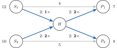
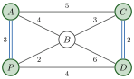
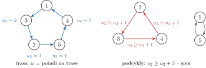
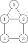
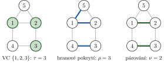
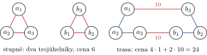
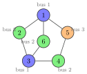

15.11 Úlohy navíc¶
Úlohy procvičují úlohu typu 3 zápočtového testu: „formulujte problém jako ILP“. Řeš je podle rámečku Postup na papíře a oddílu A.3.3: proměnné s oborem a významem, omezení po skupinách s tím, co zajišťují, účelová funkce, velikost a obě strany korespondence (řešení úlohy dá přípustné řešení se stejnou hodnotou a naopak). Každá úloha přidá jiný trik (základní triky shrnuje oddíl 15.2.4): logické podmínky (15.1), minimalizaci rozdílu maxima a minima (15.2), časové indexy a minimalizaci maxima (15.3), zachování toku (15.4), velké \(M\) a nespojitou cenu (15.5) a paritu přes pomocnou celočíselnou proměnnou (15.6). Těžší úlohy 15.7 a 15.8 porovnávají dvě formulace téhož problému (oddíl 15.5). Pododdíl 15.11.4 přidává deset modelovacích úloh z cizí sbírky (batoh, splnitelnost, barvení, pokrytí a párování, množinové pokrytí a balení, obchodní cestující, autobusy).
Neoficiální úlohy
Úlohy v tomto oddílu nejsou oficiální zadání předmětu. Jsou to procvičovací úlohy navíc k látce kapitoly. Každý model jsme porovnali s hrubou silou: skript sestavil ILP pro stovky malých náhodných instancí, vyřešil ho (scipy.optimize.milp) a optimum porovnal s optimem spočítaným přímo – výčtem všech rozdělení, plánů a rozvrhů, maximálním tokem nebo prohledáním všech vycházek. Všechna čísla v řešeních (optima, LP meze, počty proměnných a omezení) jsou přepočítaná. Modely z pododdílu 15.11.4 jsme ověřili stejně: výčtem všech 0/1 přiřazení na zadaných i na stovkách náhodných malých instancí, LP meze řešičem.
15.11.1 Rozcvička¶
Úloha 15.1 (batoh s logickými podmínkami)
Na víkendový přechod hor vybíráme vybavení. Batoh unese nanejvýš 6 kg; každá věc má váhu a „užitek“:
| věc | zkratka | váha [kg] | užitek |
|---|---|---|---|
| stan | \(T\) | 3 | 8 |
| hamaka | \(H\) | 1 | 5 |
| plachta | \(P\) | 1 | 3 |
| vařič | \(V\) | 1 | 4 |
| plynová kartuše | \(K\) | 1 | 2 |
| foťák | \(F\) | 1 | 4 |
| powerbanka | \(B\) | 1 | 3 |
| solární nabíječka | \(S\) | 1 | 1 |
Platí čtyři podmínky:
- (P1)Vařič bez kartuše je k ničemu a kartuše bez vařiče také: buď beru obojí, nebo nic z toho.
- (P2)Spím buď ve stanu, nebo v hamace – právě v jednom z nich.
- (P3)Beru-li hamaku, beru i plachtu.
- (P4)Beru-li foťák, musím ho mít čím nabíjet: powerbankou nebo solární nabíječkou.
- Zapište úlohu jako ILP (proměnné, omezení, účelová funkce, velikost).
- Ověřte tabulkou všech kombinací, že nerovnice pro (P4) zakazuje přesně to, co věta.
- Které z výběrů \(\{T,V,K,F\}\), \(\{H,V,K,F,B\}\), \(\{T,F,B\}\) jsou přípustné?
- Najděte optimum a zdůvodněte, že lepší není.
Řešení
a) Proměnné. \(x_i\in\{0,1\}\) pro \(i\in\{T,H,P,V,K,F,B,S\}\): \(x_i=1\) právě když věc \(i\) beru.
Omezení.
- (O0) \(3x_T+x_H+x_P+x_V+x_K+x_F+x_B+x_S\le 6\) – batoh unese 6 kg.
- (P1) \(x_V=x_K\) – ekvivalence. Je to dvojice implikací \(x_V\le x_K\) a \(x_K\le x_V\); zakáže kombinace \((1,0)\) i \((0,1)\).
- (P2) \(x_T+x_H=1\) – „právě jeden“: \(\ge1\) je „aspoň jeden“, \(\le1\) „nejvýš jeden“.
- (P3) \(x_H\le x_P\) – implikace \(H\Rightarrow P\).
- (P4) \(x_F\le x_B+x_S\) – implikace, v jejímž závěru je disjunkce: při \(x_F=1\) musí být pravá strana aspoň 1, tj. \(B\lor S\); při \(x_F=0\) nerovnice neříká nic.
Účel. \(\max\ 8x_T+5x_H+3x_P+4x_V+2x_K+4x_F+3x_B+x_S\). Velikost: 8 binárních proměnných, 5 omezení (rovnice (P1) a (P2) počítáme jako jedno omezení).
b) Tabulka pro (P4). Věta je nepravdivá jen tehdy, když beru foťák a nemám ani powerbanku, ani nabíječku:
| \(x_F\) | \(x_B\) | \(x_S\) | \(x_F\le x_B+x_S\) | věta (P4) |
|---|---|---|---|---|
| 0 | libovolně | libovolně | platí (\(0\le\cdot\)) | platí |
| 1 | 0 | 0 | neplatí (\(1\le0\)) | neplatí |
| 1 | 0 | 1 | platí | platí |
| 1 | 1 | 0 | platí | platí |
| 1 | 1 | 1 | platí | platí |
První řádek shrnuje čtyři kombinace s \(x_F=0\). Nerovnice tedy zakazuje přesně jedinou kombinaci ze všech osmi, stejně jako věta.
c) Kontrola výběrů.
- \(\{T,V,K,F\}\): váha \(3+1+1+1=6\le6\), (P1)–(P3) platí, ale (P4) ne: \(x_F=1>x_B+x_S=0\). Nepřípustný.
- \(\{H,V,K,F,B\}\): váha 5, ale (P3) neplatí: \(x_H=1>x_P=0\). Nepřípustný.
- \(\{T,F,B\}\): váha 5, (P1) (\(0=0\)), (P2) (\(1+0=1\)), (P3) (\(0\le0\)), (P4) (\(1\le1+0\)). Přípustný, užitek \(8+4+3=15\).
d) Optimum. Podle (P2) rozebereme dva případy.
- Stan (\(x_T=1\), \(x_H=0\)): 3 kg a užitek 8, zbývají 3 kg. Všechny zbylé věci váží 1 kg, vybíráme tedy nejvýš tři z \(P,V,K,F,B,S\). Vezmu-li vařič, musím i kartuši, a ke dvojici (užitek 6) se vejde jedna věc s užitkem nejvýš 3 (foťák ne, potřeboval by i nabíjení): nejvýš 9. Bez vařiče nesmím vzít ani kartuši (P1); nejlepší trojice z \(P,F,B,S\) s užitky \(3,4,3,1\) je \(F,B,P\) s užitkem 10 a (P4) splňuje. Celkem nejvýš \(8+10=18\).
- Hamaka (\(x_H=1\), \(x_T=0\)): (P3) vynutí plachtu; 2 kg a užitek \(5+3=8\), zbývají 4 kg. Zbylé věci \(V,K,F,B,S\) váží dohromady 5 kg (užitek \(4+2+4+3+1=14\)), takže aspoň jednu musíme vynechat. Vynechání \(S\) stojí 1 a (P4) platí dál díky \(B\); vynechání kterékoli jiné stojí aspoň 2 (bez \(K\) musí pryč i \(V\)). Nejlépe 13, celkem \(8+13=21\).
Optimum je 21: \(\{H,P,V,K,F,B\}\) s váhou přesně 6 kg. (Ověřeno výčtem všech \(2^8=256\) výběrů: model připouští přesně výběry, které splňují slovní podmínky, a jediné optimum je toto.)
Úloha 15.2 (spravedlivé dědictví)
Dědictví tvoří \(n\) předmětů s odhadní hodnotou \(h_1,\dots,h_n\in\N\); dělí se mezi \(m\) dědiců a každý předmět dostane celý právě jeden dědic. Cílem je, aby rozdělení bylo co nejspravedlivější: minimalizovat rozdíl mezi hodnotou, kterou dostane nejbohatší a nejchudší dědic.
- Formulujte úlohu jako ILP: proměnné s oborem a významem, omezení po skupinách s tím, co zajišťují, účelová funkce, velikost. Zdůvodněte, proč optimum ILP je nejmenší možný rozdíl.
- Doplňte: dvojice předmětů z množiny \(S\) musí dostat stejný dědic (dům a garáž), dědic \(j\) smí dostat nejvýše \(k_j\) předmětů a předmět \(p\) je v závěti odkázán dědici \(d\).
- Tři dědicové, hodnoty (ve statisících Kč) dům 8, byt 7, pole 6, auto 5, les 4, chata 3, garáž 2. Určete optimum bez podmínek a s podmínkou „dům a garáž dostane stejný dědic“.
Řešení
a) Proměnné.
- \(x_{ij}\in\{0,1\}\) pro \(i=1,\dots,n\), \(j=1,\dots,m\): \(x_{ij}=1\) právě když předmět \(i\) dostane dědic \(j\);
- \(U,L\in\mathbb R\): horní a dolní mez na hodnotu dílu každého dědice (v optimu nejbohatší a nejchudší díl).
Omezení.
- Každý předmět dostane právě jeden dědic: \(\sum_{j=1}^m x_{ij}=1\) pro každé \(i\). (\(n\) omezení)
- \(U\) je aspoň díl každého dědice: \(U\ge\sum_{i=1}^n h_ix_{ij}\) pro každé \(j\). (\(m\) omezení)
- \(L\) je nejvýše díl každého dědice: \(L\le\sum_{i=1}^n h_ix_{ij}\) pro každé \(j\). (\(m\) omezení)
Účelová funkce: \(\min\ U-L\). Výraz \(\max_j(\cdot)-\min_j(\cdot)\) není lineární; nahradíme ho dvěma pomocnými proměnnými – je to trik „minimalizace maxima“ použitý dvakrát (maximum stlačujeme shora, minimum vytahujeme zdola).
Správnost. (\(\Rightarrow\)) Rozdělení s díly \(s_1,\dots,s_m\): \(x_{ij}\) podle rozdělení, \(U=\max_js_j\), \(L=\min_js_j\); omezení platí a hodnota je přesně rozdíl. (\(\Leftarrow\)) V přípustném řešení dostane každý předmět právě jeden dědic (1), díly jsou \(s_j=\sum_ih_ix_{ij}\) a podle 2, 3 je \(U\ge\max_js_j\) a \(L\le\min_js_j\), takže \(U-L\) je aspoň rozdíl tohoto rozdělení. Minimalizace dá \(U=\max\), \(L=\min\); optima se rovnají.
Velikost. \(nm+2\) proměnných a \(n+2m\) omezení.
b) Doplnění.
- \(\{a,b\}\in S\) (ekvivalence): \(x_{aj}=x_{bj}\) pro každé \(j\) (\(m|S|\) omezení);
- nejvýše \(k_j\) předmětů: \(\sum_ix_{ij}\le k_j\) pro každé \(j\) (\(m\) omezení);
- odkaz v závěti: \(x_{pd}=1\) (jedno omezení, nebo proměnnou rovnou zafixujeme).
c) Bez podmínek. Součet je \(35\), což není dělitelné třemi, takže díly nejsou stejné a rozdíl je aspoň 1. Rozdíl 1 dá \(\{\text{dům},\text{les}\}=12\), \(\{\text{byt},\text{auto}\}=12\), \(\{\text{pole},\text{chata},\text{garáž}\}=11\). Optimum je 1.
S podmínkou dům + garáž. Rozdíl 1 by při součtu 35 vyžadoval díly \(12,12,11\). Dědic s domem a garáží má aspoň \(8+2=10\); kdyby dostal jen je, má 10 – málo; s čímkoli dalším (nejlevnější je chata za 3) má aspoň \(13\) – moc. Rozdíl 1 tedy nejde. Rozdíl 2 jde: \(\{\text{dům},\text{garáž},\text{chata}\}=13\), \(\{\text{byt},\text{les}\}=11\), \(\{\text{pole},\text{auto}\}=11\). Optimum je 2.
Velikost pro c): \(7\cdot3+2=23\) proměnných, \(7+2\cdot3=13\) omezení, s podmínkou dům + garáž navíc 3.
(Ověřeno skriptem: model porovnán s výčtem všech rozdělení na 300 náhodných instancích do 6 předmětů a 3 dědiců s náhodnými podmínkami z bodu b); instance c) řešičem i výčtem všech \(3^7\) rozdělení.)
15.11.2 Základní úlohy¶
Úloha 15.3 (studijní plán s prerekvizitami)
Student plánuje studium. Je dána množina předmětů \(P\), předmět \(p\) má \(k_p\in\N\) kreditů. Prerekvizity \(R\subseteq P\times P\): pro \((q,p)\in R\) smí \(p\) absolvovat až v semestru ostře po absolvování \(q\). Povinné předměty \(M\subseteq P\) musí absolvovat, ostatní může. Za semestr smí mít nejvýše \(K\) kreditů, celkem potřebuje aspoň \(C\) kreditů, každý předmět absolvuje nejvýše jednou (a zapsaný předmět vždy udělá). Cílem je dostudovat v co nejméně semestrech.
- Formulujte úlohu jako ILP (proměnné s významem, omezení s tím, co zajišťují, účelová funkce, velikost). Kolik semestrů stačí v modelu uvažovat?
- Předměty z množiny \(X\subseteq P\) se obsahem překrývají – absolvovat lze nejvýše jeden z nich. Předměty \(p\) a \(p'\) (přednáška a cvičení) musejí být ve stejném semestru. Doplňte model.
- Předměty: \(A\) Programování 1 (6 kr.), \(B\) Programování 2 (6), \(C\) Algoritmy (5), \(D\) Diskrétní matematika (5), \(E\) Složitost (4), \(F\) Databáze (5), \(G\) Webové aplikace (4); prerekvizity \(A\to B\), \(B\to C\), \(C\to E\), \(D\to E\), \(A\to F\), \(F\to G\); povinné \(A,\dots,E\). Určete optimum pro \(K=11\), \(C=30\) a pro \(K=10\), \(C=35\).
Řešení
Kolik semestrů. Stačí \(S=|P|\): v přípustném plánu lze prázdný semestr vynechat (posunutím dalších o jeden dřív se pořadí předmětů ani kredity za semestr nezmění), takže plán obsadí nejvýše \(|P|\) semestrů.
a) Proměnné.
- \(x_{p,s}\in\{0,1\}\) pro \(p\in P\), \(s=1,\dots,S\): \(x_{p,s}=1\) právě když předmět \(p\) absolvuje v semestru \(s\);
- \(z\in\mathbb Z\): počet semestrů studia (v optimu číslo posledního neprázdného semestru).
Omezení.
- Povinné právě jednou, ostatní nejvýše jednou: \(\sum_{s}x_{p,s}=1\) pro \(p\in M\) a \(\sum_sx_{p,s}\le1\) pro \(p\notin M\). (\(|P|\) omezení)
- Kredity za semestr: \(\sum_{p\in P}k_px_{p,s}\le K\) pro každé \(s\). (\(S\) omezení)
- Kredity celkem: \(\sum_{p\in P}\sum_s k_px_{p,s}\ge C\). (1 omezení)
- Prerekvizita \((q,p)\): je-li \(p\) v semestru \(s\), je \(q\) v některém dřívějším: \(x_{p,s}\le\sum_{u<s}x_{q,u}\) pro každé \(s\) (implikace „\(a\Rightarrow b\)“ jako \(a\le b\); pro \(s=1\) je to \(x_{p,1}\le0\)). (\(|R|\cdot S\) omezení)
- Minimalizace maxima: \(z\ge\sum_s s\cdot x_{p,s}\) pro každé \(p\). Pravá strana je číslo semestru, ve kterém se \(p\) absolvuje (nebo 0), protože se absolvuje nejvýše jednou. (\(|P|\) omezení)
Účelová funkce: \(\min z\).
Správnost. (\(\Rightarrow\)) Plán končící semestrem \(r\): \(x_{p,s}=1\) podle plánu, \(z=r\). Omezení 1–4 jsou pravidla studia, 5 platí, protože žádný předmět není po semestru \(r\). (\(\Leftarrow\)) V přípustném řešení je každý povinný předmět právě jednou a ostatní nejvýše jednou (1), kredity sedí (2, 3); je-li \(p\) v semestru \(s\), je \(q\) v nějakém \(u<s\), a protože jen jednou, je to jeho semestr (4); podle 5 jsou všechny předměty nejpozději v semestru \(z\). Minimalizace stlačí \(z\) na poslední použitý semestr. Optima se rovnají.
Velikost. \(|P|\cdot S+1\) proměnných a \(|P|+S+1+|R|S+|P|\) omezení; pro \(S=|P|\) je to \(O(|P|^2+|R|\cdot|P|)\). V instanci c) (\(|P|=7\), \(|R|=6\)): 50 proměnných a \(7+7+1+42+7=64\) omezení.
b) Doplnění. Překryv: \(\sum_{p\in X}\sum_sx_{p,s}\le1\) (jedno omezení, „nejvýše jeden“). Stejný semestr: \(x_{p,s}=x_{p',s}\) pro každé \(s\) (\(S\) omezení, ekvivalence po semestrech; je-li \(p\) povinný, je tím povinný i \(p'\)).
c) Instance. Řetěz \(A\to B\to C\to E\) potřebuje čtyři různé semestry, takže optimum je aspoň 4.
- \(K=11\), \(C=30\): semestr 1: \(A,D\) (11 kr.), 2: \(B\) (6), 3: \(C,F\) (10), 4: \(E\) (4); celkem 31 kreditů, prerekvizity sedí. Optimum 4.
- \(K=10\), \(C=35\): všech sedm předmětů má dohromady 35 kreditů, takže se musí absolvovat všechny. Při čtyřech semestrech vynutí řetěz \(A\) v 1., \(B\) ve 2., \(C\) ve 3. a \(E\) ve 4. semestru. K \(A\) (6 kr.) se v 1. semestru nic nevejde (\(D\) má 5 kr., \(F\) a \(G\) potřebují dřív \(A\)), ke \(B\) ve 2. semestru také ne (\(D\), \(F\) mají 5 kr., \(G\) potřebuje \(F\)). Na 3. a 4. semestr zbude \(C,D,E,F,G\) s 23 kredity, ale vejde se tam jen \(2\cdot10=20\) – spor. Optimum je 5, např. 1: \(A\); 2: \(B\); 3: \(C,D\); 4: \(E,F\); 5: \(G\).
(Ověřeno skriptem: model porovnán s výčtem všech plánů na 250 náhodných instancích do 5 předmětů; instance c) řešičem i výčtem všech \(8^7\) přiřazení semestrů.)
Úloha 15.4 (rozvoz palet kamiony)
Firma rozváží palety po silniční síti, orientovaném grafu \(G=(V,A)\). Sklady \(W\subseteq V\) mají zásobu \(a_v\) palet, prodejny \(D\subseteq V\) potřebují přesně \(d_v\) palet, ostatní vrcholy jsou překladiště (co přijede, to odjede). Po hraně \((u,v)\) jezdí kamiony s kapacitou \(Q\) palet a každý kamion, který po hraně jede, stojí \(c_{uv}\) Kč bez ohledu na náklad. Cílem je uspokojit poptávku nejlevněji.
- Formulujte úlohu jako ILP (proměnné, omezení, účel, velikost) a zdůvodněte korektnost.
- Most na hraně \((u,v)\) unese nejvýše \(b_{uv}\) kamionů. Doplňte model.
- Sklady \(S_1\) (12 palet) a \(S_2\) (10), překladiště \(H\), prodejny \(P_1\) (7) a \(P_2\) (8), \(Q=5\), hrany a cena kamionu: \(S_1\to P_1\) 4, \(S_1\to H\) 2, \(S_2\to H\) 2, \(S_2\to P_2\) 5, \(H\to P_1\) 2, \(H\to P_2\) 2. Najděte optimum a dokažte, že lepší není. Jak se změní, unese-li každá z hran \(H\to P_1\) a \(H\to P_2\) nejvýše jeden kamion?
Řešení
a) Proměnné. Pro každou hranu \((u,v)\in A\):
- \(f_{uv}\in\mathbb Z_{\ge0}\): kolik palet se po hraně přepraví;
- \(n_{uv}\in\mathbb Z_{\ge0}\): kolik kamionů po hraně pojede.
Omezení. Značíme \(\mathrm{out}(v)=\sum_{(v,w)\in A}f_{vw}\) a \(\mathrm{in}(v)=\sum_{(u,v)\in A}f_{uv}\).
- Sklad odveze nejvýše svou zásobu: \(\mathrm{out}(v)-\mathrm{in}(v)\le a_v\) pro \(v\in W\).
- Prodejna dostane přesně poptávku: \(\mathrm{in}(v)-\mathrm{out}(v)=d_v\) pro \(v\in D\).
- Překladiště nic nevyrábí ani nespotřebuje: \(\mathrm{in}(v)=\mathrm{out}(v)\) pro ostatní \(v\).
- Palety vezou kamiony: \(f_{uv}\le Q\,n_{uv}\) pro každou hranu (vypínač s kapacitou).
Účelová funkce: \(\min\sum_{(u,v)\in A}c_{uv}\,n_{uv}\).
Správnost. (\(\Rightarrow\)) Přepravní plán (kolik palet a kolik kamionů jede po které hraně) splňuje 1–3, protože palety v překladištích nevznikají ani nemizí, a 4, protože kamiony palety uvezou; hodnota je cena plánu. (\(\Leftarrow\)) Přípustné \(f\) je tok, který ze skladů odebere nejvýše zásoby a do prodejen dodá přesně poptávku; po každé hraně jede \(n_{uv}\ge f_{uv}/Q\) kamionů, takže je uvezou, a cena je \(\sum c_{uv}n_{uv}\). V optimu je \(n_{uv}=\lceil f_{uv}/Q\rceil\) (zbytečný kamion by jen zvýšil cenu).
Velikost. \(2|A|\) proměnných a \(|V|+|A|\) omezení. V instanci c) 12 proměnných a \(5+6=11\) omezení.
Proč celočíselnost. (nad rámec přednášky) Kdyby se platilo za paletu (\(\sum c_{uv}f_{uv}\)), stačilo by LP: matice zachování toku je incidenční matice orientovaného grafu, ta je totálně unimodulární (definice 15.16), takže LP má celočíselné optimum (věta 15.17). Cena za kamion je ale „schodovitá“ a LP relaxace by jezdila zlomky kamionů: v instanci c) dá mez 12 místo 14.
b) Most. \(n_{uv}\le b_{uv}\) pro hranu s mostem.
c) Instance. Plán za 14 Kč: \(S_1\to H\) 1 kamion (5 palet), \(S_2\to H\) 2 kamiony (10 palet), \(H\to P_1\) 2 kamiony (7 palet), \(H\to P_2\) 2 kamiony (8 palet); cena \(2+4+4+4=14\).
Dolní mez. Rozdělíme hrany do dvou skupin: ze skladů (\(S_1\to P_1\), \(S_1\to H\), \(S_2\to H\), \(S_2\to P_2\)) a do prodejen (\(S_1\to P_1\), \(S_2\to P_2\), \(H\to P_1\), \(H\to P_2\)). Ze skladů musí odjet všech 15 palet, tedy aspoň \(\lceil15/5\rceil=3\) kamiony; do \(P_1\) aspoň \(\lceil7/5\rceil=2\) a do \(P_2\) aspoň \(\lceil8/5\rceil=2\) kamiony. Hrana v jedné skupině stojí 2, hrana v obou (přímé \(S_1\to P_1\) za 4 a \(S_2\to P_2\) za 5) stojí aspoň \(2+2\). Proto je cena aspoň \(2\cdot3+2\cdot4=14\) a optimum je 14.
S mosty. Do \(P_2\) přijede po \(H\to P_2\) nejvýše 5 palet, zbylé aspoň 3 musí jet po \(S_2\to P_2\), která stojí 5, tedy o 1 víc než \(2+2\); mez se zvýší na 15. Plán za 15: \(S_1\to P_1\) 1 kamion (5), \(S_2\to H\) 1 (5), \(S_2\to P_2\) 1 (5), \(H\to P_1\) 1 (2), \(H\to P_2\) 1 (3); cena \(4+2+5+2+2=15\). Optimum s mosty je 15.

Síť z bodu c): u hrany cena kamionu, tučně počet kamionů v optimálním plánu za 14 Kč, u vrcholů zásoba a poptávka. Všimni si: všechny palety jedou přes překladiště; přímé hrany jsou na kamion stejně drahé nebo dražší než dvě hrany přes \(H\).
(Ověřeno skriptem: model porovnán s výčtem počtů kamionů na hranách a kontrolou přípustnosti maximálním tokem na náhodných sítích s pěti vrcholy (399 přípustných instancí); instance c) s mosty i bez a LP mez 12 řešičem.)
Úloha 15.5 (nákup s množstevní slevou)
Kavárna potřebuje na měsíc aspoň \(D\) kg kávy (koupit smí i víc, káva se nezkazí). Kupuje se po celých kilogramech od dvou dodavatelů:
- Dodavatel A: 300 Kč/kg, za každou nenulovou objednávku navíc doprava 500 Kč; dodá nejvýš 40 kg.
- Dodavatel B: bez dopravy; při objednávce do 29 kg stojí kilogram 320 Kč, při objednávce aspoň 30 kg platí celá objednávka 280 Kč/kg; dodá nejvýš 60 kg.
Řešení
Co volíme. Kolik kg od koho – a u B navíc, ve kterém cenovém pásmu jsme. Cena od B jako funkce množství \(q\) není lineární: \(320q\) pro \(q\le29\) a \(280q\) pro \(30\le q\le60\); v bodě 30 cena skočí dolů (z 9 280 Kč za 29 kg na 8 400 Kč za 30 kg). Přípustné dvojice (množství, cena) tvoří dva oddělené úseky – to je „buď, anebo“ z oddílu 15.2. Rozdělíme proto nákup od B na dvě proměnné a binární přepínač vybere pásmo.
1. Proměnné.
- \(x_A\in\mathbb Z_{\ge0}\) … kg kávy od A; \(y_A\in\{0,1\}\) … u A objednáváme (platíme dopravu);
- \(u\in\mathbb Z_{\ge0}\) … kg od B za plnou cenu, \(v\in\mathbb Z_{\ge0}\) … kg od B za zlevněnou cenu;
- \(z\in\{0,1\}\) … objednávka u B je v pásmu se slevou (aspoň 30 kg).
2. Omezení.
- (O1) \(x_A+u+v\ge D\) – kávy je dost.
- (O2) \(x_A\le 40\,y_A\) – od A jen s placenou dopravou a nejvýš 40 kg (vypínač \(x\le My\) s \(M=40\), které je zároveň kapacitou).
- (O3) \(u\le 29\,(1-z)\) – plná cena jen bez slevy (\(z=1\) dá \(u=0\)) a nejvýš 29 kg.
- (O4) \(30\,z\le v\le 60\,z\) (dvě nerovnice) – při \(z=0\) je \(v=0\), při \(z=1\) je \(30\le v\le60\): sleva jen pro objednávku 30 až 60 kg.
3. Účel. \(\min\ 500\,y_A+300\,x_A+320\,u+280\,v\).
4. Velikost. 5 proměnných (2 binární, 3 celočíselné) a 5 nerovnic (plus nezápornost).
5. Proč optimum ILP = nejlevnější nákup.
- Nákup \(\to\) ILP: nákup \(q_A\le40\) od A a \(q_B\le60\) od B s \(q_A+q_B\ge D\) přepíšeme jako \(x_A=q_A\), \(y_A=1\) právě když \(q_A>0\); je-li \(q_B\ge30\), pak \(z=1\), \(v=q_B\), \(u=0\), jinak \(z=0\), \(u=q_B\), \(v=0\). Všechna omezení platí a účel je přesně cena nákupu.
- ILP \(\to\) nákup: z přípustného řešení vezmeme \(q_A=x_A\), \(q_B=u+v\). Při \(z=1\) je \(u=0\) a \(30\le q_B=v\le60\), cena od B je \(280v\) – přesně člen v účelu; při \(z=0\) je \(v=0\) a \(q_B=u\le29\) za \(320u\). Je-li \(x_A>0\), je podle (O2) \(y_A=1\) a doprava je započtená; při \(x_A=0\) smí být \(y_A=1\), to je ale jen dražší. Skutečná cena nákupu je tedy nejvýš hodnota účelu.
Oba směry dohromady: optimum ILP je rovno ceně nejlevnějšího nákupu.
Typická chyba. Bez \(z\), jen s \(u\le29\), \(v\le60\) a cenou \(320u+280v\), by model dovolil koupit 27 kg za zlevněnou cenu (7 560 Kč) – slevu bez dosažení 30 kg. Stejných 7 560 Kč dá i LP relaxace správného modelu (\(z=0{,}45\), \(v=27\)): binární přepínač se v relaxaci „rozpustí“ jako u big-M v oddílu 15.5.
Optimum pro \(D=27\): 8 400 Kč.
- Objednáme-li u A (\(y_A=1\)): se slevou u B stojí nákup aspoň \(500+8400>8400\); bez slevy stojí každý kg aspoň 300 Kč, celkem aspoň \(500+300\cdot27=8600\).
- Jen od B: bez slevy aspoň \(320\cdot27=8640\), se slevou aspoň \(280\cdot30=8400\).
Nejlevnější je koupit 30 kg od B za 8 400 Kč – o 3 kg víc, než je potřeba.
Optimum pro \(D=70\): 20 300 Kč. B dodá nejvýš 60 kg, takže \(x_A\ge10\) a \(y_A=1\). Bez slevy by bylo \(u\le29\) a \(x_A\ge41>40\), takže \(z=1\). Cena je pak \(500+300x_A+280v=500+280(x_A+v)+20x_A\ge500+280\cdot70+20\cdot10=20\,300\) a rovnost nastane pro \(x_A=10\), \(v=60\). Nákup: 10 kg od A, 60 kg od B.
(Ověřeno skriptem: pro všechna \(D=0,\dots,100\) dává ILP řešič, výčet všech celočíselných řešení modelu i přímý výčet všech nákupů \((q_A,q_B)\) stejné optimum.)

Cena nákupu od B (modře) a od A (šedě) podle množství. Všimni si: cena od B v bodě 30 skočí dolů, takže při \(D=27\) se vyplatí koupit víc. Graf ceny tvoří dva oddělené úseky; proto potřebujeme binární \(z\).
Úloha 15.6 (pošťák a parita)
Pošťák má projít všechny ulice vesnice: souvislý neorientovaný graf \(G=(V,E)\) s délkami ulic \(c_e>0\). Vyjde z pošty a vrátí se na ni, každou ulicí musí projít aspoň jednou a smí i víckrát. Cílem je nejkratší vycházka. Můžete použít Eulerovu větu (nad rámec přednášky): souvislý multigraf má uzavřený tah, který projde každou hranu právě jednou, právě když mají všechny jeho vrcholy sudý stupeň.
- Formulujte úlohu jako ILP s proměnnými „kolikrát navíc projde ulici \(e\)“. Podmínku „stupeň je sudý“ zapište lineárně pomocí pomocné celočíselné proměnné. Uveďte velikost a zdůvodněte korektnost.
- Ukažte, že v optimu je každá ulice prošlá nejvýše dvakrát, takže proměnné mohou být binární.
- Vesnice: \(V=\{P,A,B,C,D\}\) (\(P\) je pošta), ulice \(PA\) 3, \(PB\) 2, \(AB\) 4, \(AC\) 5, \(BC\) 3, \(CD\) 2, \(BD\) 6, \(PD\) 4. Najděte optimum.
Řešení
a) Proměnné.
- \(y_e\in\mathbb Z_{\ge0}\) pro \(e\in E\): kolikrát pošťák projde ulici \(e\) navíc (celkem \(1+y_e\)-krát);
- \(z_v\in\mathbb Z_{\ge0}\) pro \(v\in V\): pomocná proměnná pro paritu.
Omezení. Na každé křižovatce sudý počet průchodů:
Levá strana je počet průchodů ulicemi s koncem ve \(v\); rovnost se sudým číslem \(2z_v\) (\(z_v\) celé) říká přesně, že je sudý. (\(|V|\) rovnic)
Účelová funkce: \(\min\sum_{e\in E}c_e(1+y_e)=\sum_ec_e+\min\sum_ec_ey_e\).
Správnost.
- (\(\Rightarrow\)) Vycházka je uzavřený sled, který projde ulici \(e\) celkem \(t_e\ge1\)-krát; položíme \(y_e=t_e-1\). Pokaždé, když sled projde vrcholem \(v\), použije dvě ulice s koncem ve \(v\) (příchod a odchod; na poště počítáme odchod na začátku a návrat na konci jako jeden průchod). Proto je \(\sum_{e\ni v}t_e\) sudé a stačí \(z_v=\tfrac12\sum_{e\ni v}t_e\). Hodnota je délka vycházky.
- (\(\Leftarrow\)) Z přípustného \((y,z)\) sestavíme multigraf, ve kterém je ulice \(e\) \((1+y_e)\)-krát. Je souvislý (obsahuje \(G\)) a stupně \(2z_v\) jsou sudé, takže podle Eulerovy věty má uzavřený tah přes všechny hrany; začneme ho na poště. Je to vycházka délky \(\sum_ec_e(1+y_e)\).
- Hodnoty si odpovídají, optima jsou stejná. Velikost: \(|E|+|V|\) proměnných a \(|V|\) rovnic.
b) Nejvýše dvakrát. Je-li v přípustném řešení \(y_e\ge2\), snížíme \(y_e\) o 2 a \(z\) obou konců \(e\) o 1. Rovnice platí dál, \(y_e\) i \(z\) zůstanou nezáporné (levá strana rovnice klesne o 2 a je pořád aspoň \(\deg(v)\ge1\), takže \(z_v\ge1\) zůstane) a délka klesne o \(2c_e>0\). V optimu je tedy \(y_e\in\{0,1\}\) a smíme psát \(y_e\in\{0,1\}\). Úloha je pak „vyber ulice ke zdvojení tak, aby se lichým vrcholům změnila parita“.
c) Instance. Stupně: \(P\) 3, \(A\) 3, \(B\) 4, \(C\) 3, \(D\) 3; součet délek je 29. Lichým vrcholům \(P,A,C,D\) musí přibýt lichý počet zdvojených ulic, vrcholu \(B\) sudý. Zdvojení \(PA\) a \(CD\) to splní (každý z \(P,A,C,D\) dostane jednu, \(B\) žádnou) a stojí \(3+2=5\): v rovnicích \(y_{PA}=y_{CD}=1\), ostatní \(y=0\) a \(z_v=2\) pro všechna \(v\). Optimum je \(29+5=34\).
Proč lépe ne (nad rámec přednášky): zdvojené ulice se rozpadnou na cesty, které spojí liché vrcholy do dvojic. Možná spárování a nejkratší cesty: \(PA+CD=3+2=5\), \(PC+AD=5+7=12\) (\(P\)–\(B\)–\(C\) a \(A\)–\(C\)–\(D\)), \(PD+AC=4+5=9\). Nejlepší je 5.

Vesnice z bodu c): zvýrazněné vrcholy mají lichý stupeň, dvojitě zdvojené ulice \(PA\) a \(CD\) (cena navíc 5).
Poznámka k LP. Relaxace dovolí \(y=0\) a neceločíselné \(z_v=\tfrac12\deg(v)\) (u lichých vrcholů instance c je to \(\tfrac32\)) a dá mez \(\sum c_e=29\) – paritní rovnice jsou pro LP relaxaci bezcenné a řešič musí větvit. (V polynomiálním čase se úloha řeší párováním lichých vrcholů, Edmonds a Johnson 1973, nad rámec přednášky.)
(Ověřeno skriptem: model, s celočíselnými i binárními \(y\), porovnán s nejkratší uzavřenou vycházkou nalezenou prohledáním stavů „vrchol, prošlé ulice“ na 300 náhodných souvislých grafech do 6 vrcholů; instance c): optimum 34 a LP mez 29.)
15.11.3 Těžší úlohy¶
Úloha 15.7 (nezávislá množina: hranová a kliková formulace)
Pro graf \(G=(V,E)\) hledáme největší nezávislou množinu (\(\href{../ch-is/ch-is-nezavisla-mnozina.html#prob-is}{\class{woo-pk-prob-is}{\prob{Independent Set}}}\), definice 8.1, zde v optimalizační verzi; velikost optima je \(\alpha(G)\)). Dvě formulace:
- (H) hranová: \(\max\sum_v x_v\) při \(x_u+x_v\le1\) pro každou hranu \(\{u,v\}\in E\), \(x\in\{0,1\}^V\);
- (K) kliková: \(\max\sum_v x_v\) při \(\sum_{v\in Q}x_v\le1\) pro každou maximální kliku \(Q\) (aspoň se dvěma vrcholy), \(x\in\{0,1\}^V\).
- Dokažte, že (H) a (K) mají stejná celočíselná řešení.
- Dokažte, že polyedr LP relaxace (K) leží v polyedru relaxace (H), takže mez (K) je vždy aspoň tak dobrá.
- Spočítejte obě LP meze a \(\alpha(G)\) pro trojboký hranol (obrázek níže).
- Ukažte na \(K_n\), že poměr \(\mathrm{OPT}_{LP}/\mathrm{OPT}\) formulace (H) může být libovolně velký.
- Na kružnici \(C_5\) se obě formulace shodují. Spočítejte LP mez a odvoďte řez postupem z příkladu 15.22 (sečti a zaokrouhli), který ji opraví.
Řešení
a) Stejná celočíselná řešení. Celočíselné \(x\) je charakteristický vektor množiny \(S\subseteq V\). Podmínky (H) říkají přesně, že žádná hrana nemá oba konce v \(S\), tj. \(S\) je nezávislá.
- \(S\) nezávislá \(\Rightarrow\) (K): každé dva vrcholy kliky jsou sousední, takže klika obsahuje nejvýš jeden vrchol \(S\) a \(\sum_{v\in Q}x_v\le1\).
- (K) \(\Rightarrow\) \(S\) nezávislá: kdyby \(u,v\in S\) byly sousední, hrana \(\{u,v\}\) je klika a leží v nějaké maximální klice \(Q\); pak \(\sum_{w\in Q}x_w\ge x_u+x_v=2>1\), spor.
b) Relaxace (K) je uvnitř relaxace (H). Nechť \(x\in[0,1]^V\) splňuje (K) a \(\{u,v\}\in E\). Vezmeme maximální kliku \(Q\supseteq\{u,v\}\). Protože \(x\ge0\), je \(x_u+x_v\le\sum_{w\in Q}x_w\le1\), takže \(x\) splňuje i (H). Maximum přes menší množinu je nejvýš maximum přes větší: \(\alpha(G)\le\mathrm{OPT}_{LP}(K)\le\mathrm{OPT}_{LP}(H)\) (první nerovnost platí, protože obě jsou relaxace téhož ILP). Je to stejná myšlenka jako trojúhelníkové nerovnice u Vertex Cover v příkladu 15.15.
c) Trojboký hranol. Vrcholy \(1,2,3\) (trojúhelník), \(4,5,6\) (trojúhelník) a hrany \(\{1,4\},\{2,5\},\{3,6\}\); \(|E|=9\). Maximální kliky jsou oba trojúhelníky a tři „svislé“ hrany, takže (H) má 9 nerovnic a (K) jen 5.
- (H): \(x\equiv\tfrac12\) splňuje všech 9 nerovnic, hodnota 3. Víc nejde: každý vrchol leží ve třech hranách, součet všech hranových nerovnic dá \(3\sum_vx_v\le9\). Tedy \(\mathrm{OPT}_{LP}(H)=3\).
- (K): součet obou trojúhelníkových nerovnic dá \(\sum_vx_v\le2\). Množina \(\{3,5\}\) je nezávislá (sousedé 3 jsou \(1,2,6\)), takže \(2\le\alpha(G)\le\mathrm{OPT}_{LP}(K)\le2\).
Výsledek: \(\alpha(G)=\mathrm{OPT}_{LP}(K)=2<3=\mathrm{OPT}_{LP}(H)\). Kliková formulace má méně nerovnic a přesto přesnou mez.

Trojboký hranol. Vlevo optimum LP relaxace hranové formulace (všude \(\tfrac12\)), vpravo optimum relaxace klikové formulace – je rovnou celočíselné, nezávislá množina \(\{3,5\}\).
d) \(K_n\). (H) má \(\binom n2\) nerovnic a \(x\equiv\tfrac12\) je přípustné, takže \(\mathrm{OPT}_{LP}(H)\ge\tfrac n2\) (součtem všech hranových nerovnic, kde je každý vrchol \((n-1)\)-krát, dokonce \(=\tfrac n2\)). Ale \(\alpha(K_n)=1\) a (K) má jedinou nerovnici \(\sum_vx_v\le1\) s LP mezí 1. Poměr \(\mathrm{OPT}_{LP}(H)/\mathrm{OPT}=\tfrac n2\) roste nade všechny meze.
e) \(C_5\). Maximální kliky jsou jen hrany, takže (K) = (H). \(x\equiv\tfrac12\) dá hodnotu \(\tfrac52\) a součet pěti hranových nerovnic \(2\sum_vx_v\le5\) ukazuje, že víc nejde: \(\mathrm{OPT}_{LP}=\tfrac52\), kdežto \(\alpha(C_5)=2\). Řez: vydělíme součet dvěma, \(\sum_vx_v\le\tfrac52\); vlevo je pro celá \(x\) celé číslo, takže \(\sum_{v\in C_5}x_v\le2\). Platí pro všechna celočíselná řešení (odvodili jsme ji z platných nerovnic a celočíselnosti) a \(x\equiv\tfrac12\) porušuje (\(\tfrac52>2\)). S ním je LP mez 2 \(=\alpha(C_5)\), např. \(\{1,3\}\).
Poznámka. (nad rámec přednášky) Maximálních klik může být exponenciálně mnoho, proto se klikové nerovnice (stejně jako u barvení v úloze 8.3) přidávají jako řezy až na vyžádání.
(Ověřeno skriptem: na hranolu, \(C_5\), \(K_4\) až \(K_6\) a na 300 náhodných grafech do 7 vrcholů mají (H) a (K) stejná celočíselná řešení a platí \(\alpha\le\mathrm{OPT}_{LP}(K)\le\mathrm{OPT}_{LP}(H)\); LP hodnoty spočítány řešičem.)
Úloha 15.8 (zákaz podcyklů vs. MTZ)
(nad rámec přednášky) Formulace MTZ (Miller, Tucker, Zemlin) v přednášce není. Uvažujme orientovanou verzi obchodního cestujícího: města \(1,\dots,n\), cena \(c_{ij}\) za cestu z \(i\) do \(j\), proměnné \(x_{ij}\in\{0,1\}\) pro \(i\ne j\) („jede z \(i\) přímo do \(j\)“) a stupně
Ke stupňům přidáme buď zákaz podcyklů (orientovaná obdoba oddílu 15.3.2) \(\sum_{i\in S,\,j\notin S}x_{ij}\ge1\) pro každou \(\emptyset\ne S\subsetneq V\), nebo MTZ: reálné proměnné \(u_i\) pro \(i=2,\dots,n\) s \(2\le u_i\le n\) a nerovnice
- Spočítejte proměnné a omezení obou modelů pro \(n=5\), \(10\), \(50\).
- Dokažte, že každou trasu lze doplnit o \(u\) tak, aby platilo MTZ.
- Dokažte, že každé celočíselné řešení stupňů a MTZ je trasa. Ukažte na \(n=5\) a podcyklech \(2\to3\to4\to2\), \(1\to5\to1\), kde MTZ selže.
- Proč se MTZ nepíše i pro město 1?
Řešení
a) Velikost. Oba modely mají \(n(n-1)\) proměnných \(x_{ij}\) a \(2n\) rovnic stupňů. Zákaz podcyklů přidá \(2^n-2\) nerovnic (všechny neprázdné vlastní \(S\)). MTZ přidá \(n-1\) proměnných \(u_i\), \((n-1)(n-2)\) nerovnic (uspořádané dvojice různých měst z \(\{2,\dots,n\}\)) a \(2(n-1)\) mezí.
| \(n\) | podcykly: proměnné | podcykly: omezení | MTZ: proměnné | MTZ: omezení |
|---|---|---|---|---|
| 5 | 20 | \(10+30=40\) | 24 | \(10+12+8=30\) |
| 10 | 90 | \(20+1022=1042\) | 99 | \(20+72+18=110\) |
| 50 | 2450 | \(100+2^{50}-2\approx1{,}13\cdot10^{15}\) | 2499 | \(100+2352+98=2550\) |
MTZ má polynomiálně mnoho omezení (\(\Theta(n^2)\)), zákaz podcyklů exponenciálně.
b) Trasa splňuje MTZ. Trasa \(1=v_1\to v_2\to\dots\to v_n\to1\); položíme \(u_{v_k}=k\) pro \(k=2,\dots,n\) (pořadí města na trase), takže \(2\le u_i\le n\). Pro \(i,j\ne1\) s \(x_{ij}=1\) jde \(j\) hned po \(i\), tedy \(u_j=u_i+1\) a \(u_i-u_j+n=n-1\le n-1\). Pro \(x_{ij}=0\) je \(u_i-u_j\le n-2\le n-1\), protože obě hodnoty leží v \([2,n]\).
c) Řešení MTZ je trasa. Celočíselné \(x\) splňující stupně dává každému městu právě jednoho následníka a právě jednoho předchůdce (a \(x_{ii}\) neexistuje), takže vybrané šipky tvoří disjunktní orientované cykly přes všechna města. Je-li cyklů víc, aspoň jeden, \(i_1\to i_2\to\dots\to i_k\to i_1\) s \(k\ge2\), neobsahuje město 1. Všechny jeho šipky mají \(x=1\) a oba konce v \(\{2,\dots,n\}\), takže pro ně platí MTZ. Sečteme těchto \(k\) nerovnic:
tj. \(nk\le(n-1)k\), spor s \(k\ge1\). Zbývá jediný cyklus přes všechna města – trasa.
Příklad \(n=5\). Pro šipky \(2\to3\), \(3\to4\), \(4\to2\) dává MTZ \(u_2-u_3+5\le4\), \(u_3-u_4+5\le4\), \(u_4-u_2+5\le4\), tj. \(u_3\ge u_2+1\), \(u_4\ge u_3+1\), \(u_2\ge u_4+1\), tedy \(u_2\ge u_2+3\) – spor (součet: \(15\le12\)). Cyklus \(1\to5\to1\) obsahuje město 1 a MTZ ho samo neomezuje; vadí ten druhý.

Vlevo trasa \(1\to3\to2\to5\to4\to1\) s hodnotami \(u\) podle pořadí; všechny nerovnice MTZ platí. Vpravo dva podcykly: kolem cyklu bez města 1 by \(u\) muselo pořád růst, což nejde.
d) Proč ne pro město 1. Trasa je sama cyklem přes všechna města. Kdyby MTZ platilo i pro město 1 (s \(u_1\)), stejný součet přes celou trasu by dal \(n\cdot n\le(n-1)n\) – žádná trasa by nebyla přípustná. Město 1 je „start“, kde číslování \(u\) smí skočit z \(n\) zpátky.
Který model řešiči? MTZ jde celý vypsat, ale jeho LP relaxace je slabší: TSP je minimalizace, LP mez je dolní a na náhodných instancích s \(n=4\) až 6 nebyla LP mez MTZ nikdy vyšší než mez se zákazem podcyklů a často byla ostře nižší (obě ILP přitom daly optimum rovné hrubé síle). Proto se v praxi používá zákaz podcyklů přidávaný separací (oddíl 15.7): MTZ je malý, ale slabý, zákaz podcyklů silný, ale exponenciální – a separace dovolí použít silný model, aniž bychom ho celý vypsali. Části b) a c) jsou ověřeny i výčtem: pro \(n\le6\) připustí MTZ přesně ta řešení stupňů, která jsou trasou (pro \(n=6\) je 120 tras z 265 řešení stupňů).
15.11.4 Úlohy z jiných sbírek¶
Úlohy v tomto pododdílu pocházejí ze sbírky „External Practice Bank“, kterou sestavil spolužák z volně dostupných materiálů (hlavně MFF UK); zadání jsou česky převyprávěná, řešení jsou naše. Všechny jsou typu 3 zápočtového testu (formulace jako ILP) a řešení mají tvar, jaký chce postup v oddílu A.3.3: proměnné s významem, omezení po skupinách, účel, velikost a obě strany korespondence řešení. Několik modelů už ve skriptech je (batoh, splnitelnost 3-KNF, \(\href{../ch-is/ch-is-vertex-cover.html#prob-vc}{\class{woo-pk-prob-vc}{\prob{Vertex Cover}}}\), 3-barvení, obchodní cestující, chromatické číslo); u takové úlohy to v zadání přiznáváme a řešení se soustředí na to, co je nové. Úlohy 15.17 a 15.18 jsou těžší.
Všechny úlohy pododdílu jsou modely ILP: stačí kuchařka „model ILP“ z rámečku na začátku oddílu; problémy, které skripta jinde nedefinují (hranové pokrytí, párování), definuje zadání.
Úloha 15.9 (batoh jako 0/1 ILP)
Je dáno \(n\) nedělitelných předmětů s vahami \(w_1,\dots,w_n\) a cenami \(v_1,\dots,v_n\) (kladná celá čísla) a kapacita batohu \(B\). Je to optimalizační verze problému \(\href{../ch-cisla/ch-cisla-ciselne-problemy.html#prob-knapsack}{\class{woo-pk-prob-knapsack}{\prob{Knapsack}}}\) (definice 11.11); model je v oddílu 15.1.4 – zkuste ho napsat bez nahlížení.
- Formulujte 0/1 ILP, které vybere předměty s co největší celkovou cenou a celkovou váhou nejvýš \(B\). Uveďte velikost a zdůvodněte obě strany korespondence mezi výběry předmětů a řešeními ILP.
- Pro \(w=(6,5,5)\), \(v=(9,7,7)\), \(B=10\) najděte optimum ILP a optimum LP relaxace. Co dá hladový výběr podle poměru cena/váha? Dokažte optimalitu pomocí meze z relaxace.
Zdroj: M. Balko, Lineární programování a kombinatorická optimalizace – cvičení 2 (MFF UK), úloha 2.
Řešení
a) Proměnné. \(x_i\in\{0,1\}\) pro \(i=1,\dots,n\): \(x_i=1\) právě když předmět \(i\) beru. Obor \(\{0,1\}\) vyjadřuje nedělitelnost; s \(0\le x_i\le1\) by šlo vzít část předmětu.
Omezení. \(\sum_{i=1}^{n}w_ix_i\le B\) – celková váha vybraných předmětů nepřekročí kapacitu.
Účel. \(\max\sum_{i=1}^{n}v_ix_i\) – celková cena vybraných předmětů.
Velikost. \(n\) binárních proměnných a jedno omezení.
Korespondence.
- Výběr \(\to\) ILP: výběr \(S\subseteq\{1,\dots,n\}\) s \(\sum_{i\in S}w_i\le B\) zapíšeme jako charakteristický vektor (\(x_i=1\) právě pro \(i\in S\)). Omezení platí, protože \(\sum_iw_ix_i=\sum_{i\in S}w_i\le B\), a hodnota účelu je \(\sum_{i\in S}v_i\), cena výběru.
- ILP \(\to\) výběr: z přípustného \(x\) vezmeme \(S=\{i: x_i=1\}\). Jeho váha je \(\sum_iw_ix_i\le B\), výběr se tedy vejde, a jeho cena je hodnota účelu.
Obě zobrazení jsou navzájem inverzní a zachovávají hodnotu, takže optimum ILP je cena nejlepšího výběru.
b) Instance. Všech 8 vektorů: přípustné jsou \((0,0,0)\), \((1,0,0)\) s cenou 9, \((0,1,0)\) a \((0,0,1)\) s cenou 7 a \((0,1,1)\) s váhou přesně 10 a cenou 14. Ostatní se nevejdou: \((1,1,0)\) a \((1,0,1)\) váží 11, \((1,1,1)\) váží 16. Optimum ILP je 14, předměty 2 a 3.
Hladově podle poměru: \(\tfrac96=1{,}5>\tfrac75=1{,}4\), takže nejdřív předmět 1 (váha 6). Pak už se nevejde žádný další (\(6+5=11>10\)) a hladový výběr má cenu jen 9.
LP relaxace (hladově s useknutím posledního předmětu jako v příkladu 15.9): předmět 1 celý, zbývá kapacita 4, z předmětu 2 vezmeme \(\tfrac45\). \(x^*=(1,\tfrac45,0)\), \(\mathrm{OPT}_{LP}=9+\tfrac45\cdot7=14{,}6\). Každý celočíselný výběr má celou cenu, a protože relaxace je mez, je jeho cena nejvýš \(\lfloor14{,}6\rfloor=14\) (stejný trik jako v příkladu 15.13). Výběr \(\{2,3\}\) s cenou 14 je tedy dokázaně optimální, aniž bychom procházeli všechny vektory. (Ověřeno výčtem všech vektorů na této instanci a na 500 náhodných instancích do 7 předmětů: optimum modelu se rovná nejlepšímu výběru spočítanému přímo; LP hodnota řešičem.)
Úloha 15.10 (splnitelnost KNF jako celočíselná soustava)
Je dána formule v KNF \(\Phi=C_1\land\dots\land C_m\) nad proměnnými \(x_1,\dots,x_n\); klauzule mohou mít libovolný počet literálů. Pro 3-KNF je to redukce \(\prob{3-SAT}\redp\prob{ILP}\) z oddílu 11.2.3; tady jsou klauzule libovolně dlouhé.
- Sestavte soustavu lineárních nerovnic s celočíselnými proměnnými, která má řešení, právě když je \(\Phi\) splnitelná. Dokažte obě implikace a uveďte velikost soustavy.
- Zapište soustavu maticově (\(Ay\ge b\)) pro \(\Phi=(x_1\lor\lnot x_2\lor x_3\lor\lnot x_4)\land(\lnot x_1)\land(x_2\lor x_4)\) a najděte všechna její řešení.
- Co se stane s prázdnou klauzulí, s klauzulí, která obsahuje \(x_i\) i \(\lnot x_i\), a s opakovaným literálem?
- Proč nestačí reálné proměnné? Ukažte to na nesplnitelné formuli \(\Psi=(x_1\lor x_2)\land(\lnot x_1\lor x_2)\land(x_1\lor\lnot x_2)\land(\lnot x_1\lor\lnot x_2)\).
Zdroj: M. Balko, Lineární programování a kombinatorická optimalizace – cvičení 2 (MFF UK), úloha 3.
Řešení
Redukce: \(\href{../ch-cook/ch-cook-cook-levinova-veta.html#prob-sat}{\class{woo-pk-prob-sat}{\prob{SAT}}}\mathrel{\href{../ch-redukce/ch-redukce-jak-porovnat-slozitost-dvou-problemu.html#def-redukce}{\class{woo-pk-def-redukce}{\redp}}}\href{../ch-cisla/ch-cisla-ilp.html#prob-ilp}{\class{woo-pk-prob-ilp}{\prob{ILP}}}\), formule \(\Phi\) \(\mapsto\) soustava \(Ay\ge b\), \(0\le y\le1\), \(y\in\mathbb Z^n\) (\(n\) proměnných, \(m+2n\) nerovnic).
a) Proměnné. \(y_i\in\mathbb Z\) s mezemi \(0\le y_i\le1\) (tedy \(y_i\in\{0,1\}\)): \(y_i=1\) právě když je \(x_i\) pravdivá. Literál \(x_i\) přepíšeme na \(y_i\), literál \(\lnot x_i\) na \(1-y_i\); obojí je hodnota literálu (1 = pravda).
Omezení. Označme \(P_j\), resp. \(N_j\) indexy proměnných, které jsou v klauzuli \(C_j\) pozitivně, resp. negovaně. Klauzule je „součet hodnot literálů \(\ge1\)“:
V maticovém tvaru má řádek \(j\) matice \(A\) jedničku u pozitivních proměnných \(C_j\), \(-1\) u negovaných a nuly jinde; \(b_j=1-|N_j|\). Účelová funkce není (jde o přípustnost).
Velikost. \(n\) proměnných, \(m\) nerovnic pro klauzule a \(2n\) mezí; koeficienty jsou \(0,\pm1\) a soustava se vypíše v čase lineárním v délce \(\Phi\). Je to tedy polynomiální redukce.
Korespondence.
- \(\Phi\) splnitelná \(\Rightarrow\) soustava má řešení: pro splňující ohodnocení položíme \(y_i=1\) pro pravdivé \(x_i\) a \(y_i=0\) jinak. Meze platí. V každé klauzuli je pravdivý literál, jeho člen v součtu je 1 a ostatní členy jsou nezáporné, takže součet je aspoň 1.
- Soustava má řešení \(\Rightarrow\) \(\Phi\) splnitelná: celé \(y_i\) s \(0\le y_i\le1\) je 0 nebo 1; ohodnocení \(x_i:=y_i\). Každý člen součtu v nerovnici \(C_j\) je hodnota jednoho literálu, tedy 0 nebo 1. Součet \(\ge1\) znamená, že aspoň jeden člen je 1, tj. aspoň jeden literál \(C_j\) je pravdivý. Ohodnocení splňuje všechny klauzule.
Řešení soustavy a splňující ohodnocení si dokonce odpovídají vzájemně jednoznačně.
b) Příklad.
Tedy
Druhá nerovnice dá \(y_1=0\). Třetí připouští \((y_2,y_4)\in\{(1,0),(0,1),(1,1)\}\). První je pak \(y_3\ge y_2+y_4-1\): pro \((1,1)\) vynutí \(y_3=1\), jinak je \(y_3\) libovolné. Řešení \((y_1,y_2,y_3,y_4)\) je pět: \((0,1,0,0)\), \((0,1,1,0)\), \((0,0,0,1)\), \((0,0,1,1)\), \((0,1,1,1)\) – přesně pět splňujících ohodnocení \(\Phi\).
c) Okrajové případy. Důkaz výše nepředpokládal, že jsou literály v klauzuli různé, takže platí beze změny:
- prázdná klauzule dá \(0\ge1\) – soustava nemá řešení, stejně jako je nesplnitelná formule s prázdnou klauzulí;
- klauzule s \(x_i\) i \(\lnot x_i\) dá člen \(y_i+(1-y_i)=1\), nerovnice platí vždy – klauzule je vždy pravdivá;
- opakovaný literál, např. \((x_3\lor x_3)\), dá \(2y_3\ge1\); pro celé \(y_3\in\{0,1\}\) to znamená \(y_3=1\), přesně jako klauzule \((x_3)\).
d) Reálné proměnné nestačí. Pro \(\Psi\):
Druhá a třetí nerovnice dají \(y_1=y_2\), první a čtvrtá pak \(2y_1\ge1\) a \(2y_1\le1\), tedy \(y_1=y_2=\tfrac12\). To není celé číslo, celočíselná soustava řešení nemá (\(\Psi\) je nesplnitelná). Reálná soustava ale řešení \(y=(\tfrac12,\tfrac12)\) má. Obecně \(y\equiv\tfrac12\) splní každou nerovnici klauzule s aspoň dvěma literály (každý člen je \(\tfrac12\)), takže LP relaxace o splnitelnosti nic neřekne. Kdyby stačily reálné proměnné, řešili bychom \(\href{../ch-cook/ch-cook-cook-levinova-veta.html#prob-sat}{\class{woo-pk-prob-sat}{\prob{SAT}}}\) polynomiálně (LP je v \(\href{../ch-cas/ch-cas-tridy-p-a-exp.html#def-tridy}{\class{woo-pk-def-tridy}{\PP}}\)); celá obtížnost je v podmínce celočíselnosti.
(Ověřeno skriptem: příklad z b), \(\Psi\) a 2 000 náhodných formulí do 5 proměnných včetně prázdných a opakovaných literálů – množina řešení soustavy je vždy přesně množina splňujících ohodnocení.)
Úloha 15.11 (3-barvení jako 0/1 ILP)
Pro neorientovaný graf \(G=(V,E)\) sestavte binární ILP, které je přípustné, právě když je \(G\) 3-obarvitelný (\(\href{../ch-zoo/ch-zoo-3-coloring.html#prob-3col}{\class{woo-pk-prob-3col}{\prob{3-Coloring}}}\), definice 9.1). Napište proměnné, všechna omezení pro vrcholy a pro hrany, velikost a obě strany korespondence. Je to redukce \(\prob{3-Coloring}\redp\prob{ILP}\) z oddílu 11.2.4 – zkuste ji napsat bez nahlížení. Navíc:
- Lze rovnici „právě jedna barva“ nahradit nerovnicí \(\ge1\)? A nerovnicí \(\le1\)?
- Dokažte přímo z nerovnic, že pro \(K_4\) ILP přípustné není. Je přípustná jeho LP relaxace?
Zdroj: M. Balko, Lineární programování a kombinatorická optimalizace – cvičení 2 (MFF UK), úloha 5.
Řešení
Redukce: \(\href{../ch-zoo/ch-zoo-3-coloring.html#prob-3col}{\class{woo-pk-prob-3col}{\prob{3-Coloring}}}\mathrel{\href{../ch-redukce/ch-redukce-jak-porovnat-slozitost-dvou-problemu.html#def-redukce}{\class{woo-pk-def-redukce}{\redp}}}\href{../ch-cisla/ch-cisla-ilp.html#prob-ilp}{\class{woo-pk-prob-ilp}{\prob{ILP}}}\), graf \(G\) \(\mapsto\) binární ILP s \(3|V|\) proměnnými a \(|V|+3|E|\) omezeními.
Proměnné. \(x_{v,c}\in\{0,1\}\) pro \(v\in V\) a barvu \(c\in\{1,2,3\}\): \(x_{v,c}=1\) právě když vrchol \(v\) má barvu \(c\).
Omezení.
- (V) \(x_{v,1}+x_{v,2}+x_{v,3}=1\) pro každý \(v\in V\) – každý vrchol má právě jednu barvu;
- (H) \(x_{u,c}+x_{v,c}\le1\) pro každou hranu \(\{u,v\}\in E\) a každou barvu \(c\) – konce hrany nemají obě barvu \(c\).
Účel není (případně \(\min 0\)); ptáme se jen na přípustnost.
Velikost. \(3|V|\) binárních proměnných, \(|V|\) rovnic (V) a \(3|E|\) nerovnic (H); sestavení je lineární v \(|V|+|E|\).
Korespondence.
- 3-obarvení \(\to\) řešení: pro obarvení \(f:V\to\{1,2,3\}\) položíme \(x_{v,c}=1\) právě když \(f(v)=c\). (V) platí, protože \(v\) má jedinou barvu. Pro hranu \(\{u,v\}\) je \(f(u)\ne f(v)\), takže pro každé \(c\) je nejvýš jedno z \(x_{u,c}\), \(x_{v,c}\) rovno 1 a (H) platí.
- Řešení \(\to\) 3-obarvení: podle (V) má každý vrchol právě jedno \(c\) s \(x_{v,c}=1\); to je \(f(v)\). Kdyby hrana \(\{u,v\}\) měla \(f(u)=f(v)=c\), bylo by \(x_{u,c}+x_{v,c}=2>1\) – spor s (H). Obarvení je tedy vlastní.
Řešení ILP odpovídají obarvením vzájemně jednoznačně (počet přípustných řešení = počet 3-obarvení).
a) Rovnice vs. nerovnice.
- \(\ge1\) stačí pro otázku přípustnosti. Směr „obarvení \(\to\) řešení“ platí beze změny. Naopak, má-li vrchol víc barev s \(x_{v,c}=1\), vybereme mu kteroukoli z nich. Pro hranu \(\{u,v\}\) podle (H) neexistuje barva \(c\) s \(x_{u,c}=x_{v,c}=1\), takže vybrané barvy jsou různé. Ztratí se jen vzájemná jednoznačnost: např. izolovaný vrchol má 3 řešení s rovnicí, ale 7 s nerovnicí \(\ge1\).
- \(\le1\) nestačí: \(x\equiv0\) splní (H) i „\(\le1\)“ v každém grafu, ILP by bylo přípustné i pro \(K_4\). Rovnice (V) je potřeba hlavně kvůli části „aspoň jedna barva“.
b) \(K_4\). Vrcholy \(1,2,3,4\), každé dva sousední. Pro pevnou barvu \(c\) a celočíselné \(x\) říkají nerovnice (H), že ze čtyř hodnot \(x_{1,c},\dots,x_{4,c}\in\{0,1\}\) nejsou žádné dvě rovny 1, tedy \(x_{1,c}+x_{2,c}+x_{3,c}+x_{4,c}\le1\). Sečtením přes tři barvy:
Spor, ILP přípustné není. LP relaxace přípustná je: \(x_{v,c}=\tfrac13\) splní (V) (\(3\cdot\tfrac13=1\)) i (H) (\(\tfrac13+\tfrac13\le1\)). Krok „žádné dvě jedničky \(\Rightarrow\) součet \(\le1\)“ platí jen pro celá čísla.
(Ověřeno skriptem na 150 náhodných grafech do 5 vrcholů: počet řešení ILP s rovnicí = počet 3-obarvení, ILP s \(\ge1\) je přípustné právě tehdy a každá volba barvy z jeho řešení dá vlastní obarvení; \(K_4\) nemá žádné řešení.)
Úloha 15.12 (nejmenší vrcholové pokrytí)
Pro graf \(G=(V,E)\) formulujte binární ILP, které vybere co nejméně vrcholů tak, aby každá hrana měla aspoň jeden vybraný konec (optimalizační verze \(\href{../ch-is/ch-is-vertex-cover.html#prob-vc}{\class{woo-pk-prob-vc}{\prob{Vertex Cover}}}\), definice 8.4). Rozhodovací verze je redukce \(\prob{Vertex Cover}\redp\prob{ILP}\) z oddílu 11.2.2, optimalizační je v oddílu 15.5; zkuste ji napsat bez nahlížení. Uveďte velikost a obě strany korespondence. Model vyřešte pro graf „domeček“ níže (čtverec \(1,2,3,4\) se střechou \(5\) nad hranou \(\{1,2\}\)) a spočítejte hodnotu LP relaxace. Stejný graf použijeme i v úlohách 15.13 a 15.14.

Zdroj: F. Giroire, Combinatorial Optimisation for Telecommunications, cvičení 10.
Řešení
Proměnné. \(x_v\in\{0,1\}\) pro \(v\in V\): \(x_v=1\) právě když vrchol \(v\) je v pokrytí.
Omezení. \(x_u+x_v\ge1\) pro každou hranu \(\{u,v\}\in E\) – aspoň jeden konec hrany je vybraný (disjunkce \(u\lor v\)).
Účel. \(\min\sum_{v\in V}x_v\) – počet vybraných vrcholů.
Velikost. \(|V|\) binárních proměnných, \(|E|\) nerovnic.
Korespondence. Vrcholové pokrytí \(C\) \(\mapsto\) charakteristický vektor: hrana má konec v \(C\), takže \(x_u+x_v\ge1\), a hodnota účelu je \(|C|\). Naopak z přípustného \(x\) vezmeme \(C=\{v:x_v=1\}\): nerovnice hrany říká, že aspoň jeden její konec je v \(C\), takže \(C\) je pokrytí velikosti \(\sum_vx_v\). Optimum ILP je tedy \(\tau(G)\), velikost nejmenšího pokrytí.
Domeček. Proměnné \(x_1,\dots,x_5\), šest nerovnic \(x_1+x_2\ge1\), \(x_2+x_3\ge1\), \(x_3+x_4\ge1\), \(x_1+x_4\ge1\), \(x_1+x_5\ge1\), \(x_2+x_5\ge1\).
- Dolní mez 3: sečtením nerovnic trojúhelníku \(1,2,5\) je \(2(x_1+x_2+x_5)\ge3\), pro celá čísla tedy \(x_1+x_2+x_5\ge2\). Hrana \(\{3,4\}\) s trojúhelníkem nesdílí vrchol a dá \(x_3+x_4\ge1\). Celkem \(\sum_vx_v\ge3\).
- Řešení s hodnotou 3: \(\{1,2,3\}\) – hrany \(12,15,14\) pokryje vrchol 1, hrany \(23,25\) vrchol 2, hranu \(34\) vrchol 3.
\(\tau=3\); optimální pokrytí jsou čtyři: \(\{1,2,3\}\), \(\{1,2,4\}\), \(\{1,3,5\}\), \(\{2,4,5\}\).
LP relaxace. \(x\equiv\tfrac12\) splní všechny nerovnice (\(\tfrac12+\tfrac12=1\)) s hodnotou \(\tfrac52\) a podle LP řešiče je to optimum relaxace. Mez \(2{,}5<3\), zaokrouhlená nahoru, dá právě 3 – stejný jev jako u \(K_3\) v příkladu 15.15: trojúhelník je pro tuto formulaci „zlomkově levnější“.
(Ověřeno výčtem všech 32 vektorů a na 300 náhodných grafech do 6 vrcholů: optimum ILP se rovná nejmenšímu pokrytí spočítanému přímo.)
Úloha 15.13 (nejmenší hranové pokrytí a přípustnost)
Hranové pokrytí grafu \(G=(V,E)\) je množina hran \(F\subseteq E\) taková, že každý vrchol je koncem aspoň jedné hrany z \(F\). Problém \(\href{#un-15-13}{\class{woo-pk-pojem-edge-cover}{\prob{Edge Cover}}}\) (optimalizační verze):
Vstup: graf \(G=(V,E)\).
Úkol: najít hranové pokrytí s nejmenším počtem hran (jeho velikost značíme \(\rho(G)\)).
- Formulujte \(\href{#un-15-13}{\class{woo-pk-pojem-edge-cover}{\prob{Edge Cover}}}\) jako binární ILP a zdůvodněte korespondenci.
- Jaký předpoklad o \(G\) je potřeba, aby bylo ILP přípustné? Dokažte, že je nutný i postačující.
- Vyřešte ILP pro domeček z úlohy 15.12.
- Co by popisovalo ILP, kdyby se v omezení napsalo \(=1\) místo \(\ge1\)?
Zdroj: F. Giroire, Combinatorial Optimisation for Telecommunications, cvičení 11.
Řešení
a) Proměnné. \(x_e\in\{0,1\}\) pro \(e\in E\): \(x_e=1\) právě když hrana \(e\) je v pokrytí.
Omezení. \(\sum_{e\ni v}x_e\ge1\) pro každý vrchol \(v\in V\) – aspoň jedna vybraná hrana končí ve \(v\). (Součet je přes hrany s koncem \(v\).)
Účel. \(\min\sum_{e\in E}x_e\).
Velikost. \(|E|\) binárních proměnných, \(|V|\) nerovnic.
Korespondence. Hranové pokrytí \(F\) \(\mapsto\) charakteristický vektor: vrchol \(v\) je koncem nějaké hrany z \(F\), takže součet u \(v\) je aspoň 1; hodnota je \(|F|\). Naopak přípustné \(x\) \(\mapsto\) \(F=\{e:x_e=1\}\): nerovnice u \(v\) říká, že nějaká hrana z \(F\) končí ve \(v\), takže \(F\) je hranové pokrytí velikosti \(\sum_ex_e\). Optimum ILP je \(\rho(G)\).
b) Předpoklad: \(G\) nemá izolovaný vrchol (vrchol stupně 0).
- Nutnost: je-li \(v\) izolovaný, je součet v jeho nerovnici prázdný a nerovnice zní \(0\ge1\) – ILP přípustné není. Odpovídá to skutečnosti: izolovaný vrchol nepokryje žádná hrana, hranové pokrytí neexistuje.
- Postačitelnost: bez izolovaných vrcholů je přípustné \(x\equiv1\) (všechny hrany): každý vrchol má aspoň jednu hranu.
Než model pošleme řešiči, zkontrolujeme stupně; je-li některý 0, odpovíme rovnou „neexistuje“.
c) Domeček. Pět nerovnic (vrcholy \(1,\dots,5\)) nad šesti proměnnými \(x_{12},x_{23},x_{34},x_{14},x_{15},x_{25}\).
- Dolní mez 3: každá hrana pokryje nejvýš dva vrcholy; formálně součet všech pěti nerovnic dá \(2\sum_ex_e\ge5\) (každá hrana je ve dvou nerovnicích), tedy pro celá čísla \(\sum_ex_e\ge3\).
- Řešení s hodnotou 3: \(\{12,34,15\}\) pokryje vrcholy \(1,2\) / \(3,4\) / \(5\).
\(\rho=3\) (optimálních pokrytí je sedm). LP relaxace má hodnotu \(2{,}5\), mez \(\lceil2{,}5\rceil=3\) je přesná.
d) Rovnice \(=1\) by vyžadovala, aby každý vrchol ležel na právě jedné vybrané hraně – to je perfektní párování. Domeček má lichý počet vrcholů, takže by ILP nebylo přípustné, ačkoli hranové pokrytí existuje. Typická chyba: „pokrýt“ je \(\ge1\), „rozdělit“ je \(=1\).
Poznámka. (nad rámec přednášky) \(\href{#un-15-13}{\class{woo-pk-pojem-edge-cover}{\prob{Edge Cover}}}\) je na rozdíl od \(\href{../ch-is/ch-is-vertex-cover.html#prob-vc}{\class{woo-pk-prob-vc}{\prob{Vertex Cover}}}\) v \(\href{../ch-cas/ch-cas-tridy-p-a-exp.html#def-tridy}{\class{woo-pk-def-tridy}{\PP}}\): z největšího párování (úloha 15.14) se nejmenší hranové pokrytí dostane přidáním jedné hrany ke každému nespárovanému vrcholu (Gallai: \(\rho=|V|-\nu\); u domečku \(3=5-2\)). Že problém umíme zapsat jako ILP, tedy o jeho obtížnosti nic neříká: model je redukce \(\href{#un-15-13}{\class{woo-pk-pojem-edge-cover}{\prob{Edge Cover}}}\mathrel{\href{../ch-redukce/ch-redukce-jak-porovnat-slozitost-dvou-problemu.html#def-redukce}{\class{woo-pk-def-redukce}{\redp}}}\href{../ch-cisla/ch-cisla-ilp.html#prob-ilp}{\class{woo-pk-prob-ilp}{\prob{ILP}}}\), a ta ukazuje jen, že problém není těžší než ILP.
(Ověřeno skriptem na domečku a na 300 náhodných grafech do 6 vrcholů: ILP je přípustné právě bez izolovaných vrcholů a jeho optimum se rovná nejmenšímu hranovému pokrytí spočítanému přímo i \(|V|-\nu\).)
Úloha 15.14 (největší párování)
Párování v grafu \(G=(V,E)\) je množina hran \(M\subseteq E\), z nichž žádné dvě nemají společný vrchol. Problém \(\href{#un-15-14}{\class{woo-pk-pojem-max-matching}{\prob{Max Matching}}}\):
Vstup: graf \(G=(V,E)\).
Úkol: najít párování s největším počtem hran (jeho velikost značíme \(\nu(G)\)).
- Formulujte úlohu jako binární ILP (každý vrchol smí být koncem nejvýš jedné vybrané hrany) a zdůvodněte korespondenci. Potřebuje přípustnost nějaký předpoklad?
- Vyřešte ILP pro domeček z úlohy 15.12.
- Spočítejte LP relaxaci na trojúhelníku \(K_3\) a odvoďte řez, který ji opraví. Proč u bipartitních grafů takový řez není potřeba?
Zdroj: F. Giroire, Combinatorial Optimisation for Telecommunications, cvičení 13.
Řešení
a) Proměnné. \(x_e\in\{0,1\}\) pro \(e\in E\): \(x_e=1\) právě když hrana \(e\) je v párování.
Omezení. \(\sum_{e\ni v}x_e\le1\) pro každý vrchol \(v\in V\) – ve \(v\) končí nejvýš jedna vybraná hrana.
Účel. \(\max\sum_{e\in E}x_e\).
Velikost. \(|E|\) binárních proměnných, \(|V|\) nerovnic.
Korespondence. Párování \(M\) \(\mapsto\) charakteristický vektor: kdyby u \(v\) byl součet aspoň 2, měly by dvě hrany z \(M\) společný vrchol \(v\); hodnota je \(|M|\). Naopak z přípustného \(x\) vezmeme \(M=\{e:x_e=1\}\): dvě hrany se společným vrcholem \(v\) by daly součet u \(v\) aspoň 2, takže \(M\) je párování velikosti \(\sum_ex_e\). Optimum ILP je \(\nu(G)\). Přípustnost nepotřebuje žádný předpoklad: \(x\equiv0\) (prázdné párování) je přípustné vždy.
b) Domeček. Horní mez: součet všech pěti nerovnic dá \(2\sum_ex_e\le5\), tedy pro celá čísla \(\sum_ex_e\le2\) (pět vrcholů, každá hrana spotřebuje dva). Párování \(\{12,34\}\) má dvě hrany, \(\nu=2\) (optimálních párování je šest). LP relaxace má hodnotu \(2{,}5\) (např. \(x\equiv\tfrac12\) na hranách \(12\), \(25\), \(15\) a \(x_{34}=1\); podle řešiče to je optimum relaxace).
c) Trojúhelník. Nerovnice \(x_{12}+x_{13}\le1\), \(x_{12}+x_{23}\le1\), \(x_{13}+x_{23}\le1\). Bod \(x\equiv\tfrac12\) je přípustný s hodnotou \(\tfrac32\) a víc nejde (součet nerovnic: \(2\sum x_e\le3\)), takže \(\mathrm{OPT}_{LP}=\tfrac32\), kdežto \(\nu(K_3)=1\). Řez odvodíme jako v úloze 15.7 e: součet tří nerovnic vydělíme dvěma, \(x_{12}+x_{13}+x_{23}\le\tfrac32\), a protože vlevo je pro celá \(x\) celé číslo, platí \(x_{12}+x_{13}+x_{23}\le1\). Bod \(x\equiv\tfrac12\) ho porušuje (\(\tfrac32>1\)) a s ním je LP mez 1. (nad rámec přednášky) Obecně pro každou množinu \(S\) s lichým počtem vrcholů platí \(\sum_{e\subseteq S}x_e\le\tfrac{|S|-1}2\) a s těmito nerovnicemi je relaxace přesná (Edmonds); polynomiální algoritmus pro párování existuje i bez ILP.
Bipartitní grafy. Matice omezení je incidenční matice grafu (řádek = vrchol, sloupec = hrana). U bipartitního grafu je totálně unimodulární (definice 15.16), takže podle věty 15.17 má polyedr relaxace celočíselné vrcholy a LP rovnou dá \(\nu(G)\). Trojúhelník i domeček bipartitní nejsou (obsahují lichou kružnici), takže pro ně tato záruka neplatí – a LP mez \(\nu\) u nich skutečně přestřelí (u jiných nebipartitních grafů se ale může i trefit).

Domeček ze tří úloh: vlevo nejmenší vrcholové pokrytí, uprostřed nejmenší hranové pokrytí, vpravo největší párování. Všimni si: hranové pokrytí vzniklo z párování přidáním hrany k nespárovanému vrcholu 5, a \(\nu=2\le\tau=3\) (každá hrana párování potřebuje vlastní vrchol pokrytí). (nad rámec přednášky) Platí \(\alpha+\tau=|V|\) a bez izolovaných vrcholů \(\nu+\rho=|V|\); tady \(2+3=5\) a \(2+3=5\).
(Ověřeno skriptem na domečku, \(K_3\) a 300 náhodných grafech do 6 vrcholů: optimum ILP se rovná největšímu párování spočítanému přímo; LP hodnoty řešičem.)
Úloha 15.15 (nejmenší pokrytí množinami)
Je dáno univerzum \(U\) a jeho podmnožiny \(S_1,\dots,S_m\). Sestavte binární ILP, které vybere co nejméně množin tak, aby jejich sjednocení bylo celé \(U\) (optimalizační verze \(\href{../ch-is/sec-cv3.html#cv-3-4}{\class{woo-pk-pojem-set-cover}{\prob{Set Cover}}}\) z cvičení 3.4).
- Model, velikost, korespondence; kdy je ILP přípustné?
- Ukažte, že modely z úloh 15.12 a 15.13 jsou jeho speciální případy.
- Vyřešte pro \(U=\{1,\dots,6\}\) a \(S_1=\{1,2,3\}\), \(S_2=\{3,4\}\), \(S_3=\{4,5,6\}\), \(S_4=\{1,4\}\), \(S_5=\{2,5\}\), \(S_6=\{3,6\}\), \(S_7=\{5,6\}\).
Zdroj: F. Giroire, Combinatorial Optimisation for Telecommunications, cvičení 18.
Řešení
a) Proměnné. \(x_j\in\{0,1\}\) pro \(j=1,\dots,m\): \(x_j=1\) právě když množinu \(S_j\) vybereme.
Omezení. \(\sum_{j:\,u\in S_j}x_j\ge1\) pro každý prvek \(u\in U\) – aspoň jedna vybraná množina obsahuje \(u\).
Účel. \(\min\sum_{j=1}^{m}x_j\) (s cenami množin \(\min\sum_jc_jx_j\)).
Velikost. \(m\) binárních proměnných a \(|U|\) nerovnic; matice omezení je incidenční matice „prvek \(\times\) množina“.
Korespondence. Pokrytí \(J\subseteq\{1,\dots,m\}\) (\(\bigcup_{j\in J}S_j=U\)) \(\mapsto\) charakteristický vektor: každý prvek leží v nějakém \(S_j\), \(j\in J\), takže jeho součet je aspoň 1; hodnota \(|J|\). Naopak přípustné \(x\) \(\mapsto\) \(J=\{j:x_j=1\}\): nerovnice prvku \(u\) říká, že \(u\) je v některé vybrané množině, takže sjednocení je \(U\); počet vybraných je \(\sum_jx_j\).
Přípustnost: ILP je přípustné, právě když \(S_1\cup\dots\cup S_m=U\). Pak stačí \(x\equiv1\); jinak prvek \(u\), který není v žádné \(S_j\), má nerovnici \(0\ge1\).
b) Speciální případy.
- \(\href{../ch-is/ch-is-vertex-cover.html#prob-vc}{\class{woo-pk-prob-vc}{\prob{Vertex Cover}}}\): univerzum \(U=E\) a pro každý vrchol \(v\) množina \(S_v\) hran s koncem \(v\). Hrana \(\{u,v\}\) leží jen v \(S_u\) a \(S_v\), takže její nerovnice je \(x_u+x_v\ge1\) – přesně model z úlohy 15.12.
- \(\href{#un-15-13}{\class{woo-pk-pojem-edge-cover}{\prob{Edge Cover}}}\): univerzum \(U=V\) a pro každou hranu \(e\) množina jejích dvou konců. Nerovnice vrcholu \(v\) je \(\sum_{e\ni v}x_e\ge1\) – model z úlohy 15.13; podmínka „sjednocení je \(U\)“ je „žádný izolovaný vrchol“.
Všechny tři modely jsou jeden vzor: „každý prvek je pokryt aspoň jednou“.
c) Instance. Sedm proměnných, šest nerovnic:
Jedna množina nestačí (největší má 3 prvky z 6). Dvě stačí: \(S_1\cup S_3=U\), tedy optimum je 2 (\(x_1=x_3=1\)). Je to jediné optimální řešení: dvě množiny pokryjí šest prvků, jen když mají dohromady aspoň šest prvků, tedy obě po třech, a tříprvkové jsou jen \(S_1\) a \(S_3\).
(Ověřeno výčtem všech \(2^7\) vektorů a na 300 náhodných systémech množin: ILP je přípustné právě při \(\bigcup S_j=U\) a jeho optimum se rovná nejmenšímu pokrytí spočítanému přímo.)
Úloha 15.16 (největší balení množin)
Je dán systém podmnožin \(S_1,\dots,S_m\) univerza \(U\). Sestavte binární ILP, které vybere co nejvíc množin, z nichž žádné dvě nemají společný prvek (optimalizační verze \(\href{../ch-is/ch-is-ulohy-navic.html#un-8-4}{\class{woo-pk-pojem-set-packing}{\prob{Set Packing}}}\) z úlohy 8.4).
- Model „po prvcích“, velikost, korespondence.
- Jiná možnost je zakázat každou dvojici protínajících se množin zvlášť: \(x_i+x_j\le1\), kdykoli \(S_i\cap S_j\ne\emptyset\). Má stejná celočíselná řešení? Který model má lepší LP relaxaci?
- Vyřešte pro systém z úlohy 15.15 a porovnejte LP meze obou modelů.
Zdroj: F. Giroire, Combinatorial Optimisation for Telecommunications, cvičení 20.
Řešení
a) Proměnné. \(x_j\in\{0,1\}\): \(x_j=1\) právě když množinu \(S_j\) vybereme.
Omezení. \(\sum_{j:\,u\in S_j}x_j\le1\) pro každý prvek \(u\in U\) – každý prvek je nejvýš v jedné vybrané množině.
Účel. \(\max\sum_{j=1}^{m}x_j\).
Velikost. \(m\) binárních proměnných, \(|U|\) nerovnic. Přípustné je vždy (\(x\equiv0\)).
Korespondence. Vybrané množiny jsou po dvou disjunktní, právě když žádný prvek neleží ve dvou z nich, tj. právě když pro každý prvek je součet nejvýš 1. Charakteristický vektor disjunktního výběru je tedy přípustný s hodnotou rovnou počtu množin a naopak \(\{j:x_j=1\}\) z přípustného \(x\) je disjunktní výběr. (Párování z úlohy 15.14 je speciální případ: \(U=V\), množiny jsou hrany.)
b) Dvojicový model má stejná celočíselná řešení: obě omezení říkají „žádné dvě vybrané množiny se neprotínají“. Je to nezávislá množina v konfliktním grafu (vrcholy = množiny, hrana = neprázdný průnik), stejně jako v redukci z úlohy 8.4.
Relaxace modelu po prvcích je ale silnější (její polyedr leží uvnitř polyedru dvojicového modelu): množiny obsahující prvek \(u\) se protínají po dvou, tvoří tedy kliku konfliktního grafu a nerovnice prvku \(u\) je kliková nerovnice z úlohy 15.7. Pro \(x\ge0\) z ní plyne každá dvojicová nerovnice \(x_i+x_j\le1\) s \(u\in S_i\cap S_j\). Příklad: \(S_1=\{1,2\}\), \(S_2=\{1,3\}\), \(S_3=\{1,4\}\). Dvojicový model má tři nerovnice a připouští \(x\equiv\tfrac12\) s hodnotou \(\tfrac32\); model po prvcích má nerovnici \(x_1+x_2+x_3\le1\) a LP mez 1, což je optimum.
c) Instance z úlohy 15.15. Množin je sedm, každá má aspoň 2 prvky a prvků je 6, takže disjunktní výběr má nejvýš 3 množiny. Tři má: \(S_4=\{1,4\}\), \(S_5=\{2,5\}\), \(S_6=\{3,6\}\). Optimum je 3 (jediné). LP meze: model po prvcích (6 nerovnic) dává 3, dvojicový model (13 protínajících se dvojic) \(3{,}5\).
(Ověřeno výčtem a na 300 náhodných systémech: oba modely mají stejné optimum jako největší disjunktní výběr spočítaný přímo; LP meze řešičem.)
Úloha 15.17 (oprava ILP pro obchodního cestujícího – těžší)
Je dán úplný graf \(G=(V,E)\) s \(n\) vrcholy a vahami hran \(c_e\ge0\). Uvažujme binární proměnné \(x_e\) („hrana \(e\) je na trase“), účel \(\min\sum_ec_ex_e\) a jen podmínky stupňů \(\sum_{e\ni v}x_e=2\) pro každý vrchol \(v\). Opravený model je v oddílu 15.3.2 – zkuste úlohu vyřešit bez nahlížení; hlavní je vysvětlení a protipříklad.
- Co přesně popisují podmínky stupňů? Pro které \(n\) stačí a pro které ne? Najděte ohodnocení, kde je optimum modelu se stupni ostře menší než nejkratší trasa.
- Doplňte omezení tak, aby přípustná řešení byla přesně hamiltonovské kružnice, a dokažte obě inkluze.
- Ukažte, že místo řezových nerovnic lze psát \(\sum_{e\subseteq S}x_e\le|S|-1\). Které z nerovnic jsou opravdu potřeba a kolik jich je?
Zdroj: M. Balko, Lineární programování a kombinatorická optimalizace – cvičení 2 (MFF UK), úloha 4.
Řešení
a) Co popisují stupně. Nechť \(F=\{e:x_e=1\}\) splňuje podmínky stupňů, tj. v grafu \((V,F)\) má každý vrchol stupeň 2. Vyjdeme z libovolného vrcholu a jdeme po hranách \(F\), každou použijeme jednou. Do vrcholu, ve kterém jsme ještě nebyli, vejdeme jednou hranou a druhou odejdeme, takže nikde neuvízneme dřív, než se vrátíme do startu. Komponenta je proto kružnice a \((V,F)\) je disjunktní sjednocení kružnic přes všechny vrcholy. Trasa je speciální případ s jedinou kružnicí. V grafu bez násobných hran má kružnice aspoň 3 vrcholy.
- \(n\le5\): stupně stačí. Dvě kružnice potřebují aspoň \(3+3=6\) vrcholů, takže každé řešení je jediná kružnice, tedy trasa. (Na \(K_5\) má model 12 řešení a tras je \(\tfrac{4!}2=12\).)
- \(n\ge6\): stupně nestačí. Dvě kružnice přes všechny vrcholy (např. trojúhelník a kružnice zbylých \(n-3\ge3\) vrcholů) splní všechny podmínky stupňů. Na \(K_6\) má model 70 řešení: 60 tras a 10 dvojic disjunktních trojúhelníků.
Protipříklad s vahami. \(V=\{a_1,a_2,a_3,b_1,b_2,b_3\}\), hrany uvnitř trojice \(\{a_1,a_2,a_3\}\) i uvnitř \(\{b_1,b_2,b_3\}\) stojí 1, hrany mezi trojicemi stojí 10. Dva trojúhelníky splní stupně s cenou 6 a menší nejde (šest hran, každá stojí aspoň 1). Trasa ale musí množinu \(A=\{a_1,a_2,a_3\}\) opustit a zase se do ní vrátit, takže použije aspoň dvě hrany s cenou 10 a stojí aspoň \(2\cdot10+4\cdot1=24\); trasa \(a_1a_2a_3b_1b_2b_3a_1\) stojí přesně 24. Model se stupni vrátí 6, nejkratší trasa stojí 24 – řešič by vydal dva trojúhelníky.

Protipříklad na \(K_6\) (nakresleny jen vybrané hrany; uvnitř trojic stojí hrana 1, mezi nimi 10). Vlevo optimum modelu se stupni, vpravo nejkratší trasa. Všimni si: trasa musí přejít mezi trojicemi aspoň dvakrát.
b) Oprava: zákaz podcyklů. Přidáme pro každou \(\emptyset\ne S\subsetneq V\)
kde \(\delta(S)\) jsou hrany s jedním koncem v \(S\) a druhým mimo – „trasa musí z každé části měst odjet“.
- Trasa \(\Rightarrow\) přípustné: stupně má trasa 2. Pro \(\emptyset\ne S\subsetneq V\) obsahuje trasa vrcholy v \(S\) i mimo \(S\); projdeme-li ji dokola, přejdeme mezi \(S\) a \(V\setminus S\) sudý a nenulový počet krát, tedy aspoň dvakrát, a každý přechod je hrana z \(\delta(S)\).
- Přípustné \(\Rightarrow\) trasa: podle a) je \(F\) disjunktní sjednocení kružnic. Kdyby jich bylo víc, zvolíme za \(S\) vrcholy jedné z nich: každá hrana \(F\) leží uvnitř své kružnice, žádná tedy nevede z \(S\) ven, \(\sum_{e\in\delta(S)}x_e=0<2\) – spor. Zbývá jediná kružnice přes všech \(n\) vrcholů, hamiltonovská kružnice.
Účel je délka trasy, takže optimum opraveného ILP je optimum \(\href{../ch-ts/ch-ts-optimalizacni-vs-rozhodovaci-problemy.html#prob-tsp}{\class{woo-pk-prob-tsp}{\prob{TSP}}}\). (Pro neúplný graf vezmeme jen proměnné pro hrany \(E\); ILP je pak přípustné, právě když má \(G\) hamiltonovskou kružnici – je to tedy i model pro \(\href{../ch-cisla/ch-cisla-hamiltonovska-cesta.html#ch-cisla-dhp-hc}{\class{woo-pk-pojem-hc}{\prob{HC}}}\).)
c) Ekvivalentní tvar. Sečteme podmínky stupňů přes \(v\in S\): hrana uvnitř \(S\) se započítá dvakrát (u obou konců), hrana z \(\delta(S)\) jednou, ostatní vůbec:
Proto pro \(x\) splňující stupně platí \(\sum_{e\in\delta(S)}x_e\ge2\iff\sum_{e\subseteq S}x_e\le|S|-1\): „uvnitř \(S\) nesmí být tolik hran, aby z nich vznikla kružnice přes celé \(S\)“.
Které nerovnice jsou potřeba. Množiny \(S\) a \(V\setminus S\) mají stejný řez, z \(2^n-2\) nerovnic je tedy různých \(2^{n-1}-1\). Pro \(|S|=1\) a \(|S|=2\) platí nerovnice automaticky (\(0\le0\), resp. \(x_{uv}\le1\)), stejně pro doplňky. Opravdu potřeba jsou jen \(S\) s \(3\le|S|\le n-3\) (z každé dvojice \(S\), \(V\setminus S\) jedna). Pro \(n=6\) je to 10 nerovnic pro trojice – přesně tolik, kolik je dvojic trojúhelníků, a každá zakáže jednu. Obecně jich je pořád exponenciálně mnoho (pro \(n=50\) asi \(5{,}6\cdot10^{14}\)), proto se přidávají separací (oddíl 15.7) nebo se použije polynomiální, ale slabší MTZ z úlohy 15.8.
(Ověřeno výčtem všech \(2^{10}\), resp. \(2^{15}\) vektorů na \(K_5\) a \(K_6\): řešení se stupni 12, resp. 70; řezové i „vnitřní“ nerovnice připustí přesně trasy; na \(K_6\) stačí 10 nerovnic pro trojice; ceny 6 a 24 výčtem.)
Úloha 15.18 (autobusy pro neslučitelné studenty – těžší)
Na výlet jede \(n\) studentů \(1,\dots,n\). Některé dvojice spolu nesmějí jet stejným autobusem; množinu těchto neslučitelných dvojic značíme \(K\). Autobusy nemají omezenou kapacitu. Chceme objednat co nejméně autobusů. Je to chromatické číslo grafu konfliktů, model je v cvičení 8.3; tady jde o dvě věci, které jsou tam jen zmíněné.
- Sestavte ILP s pevným počtem \(h\) kandidátních autobusů. Jak \(h\) zvolit, aby model byl správný, a proč na tom záleží?
- Popište symetrii modelu: kolikrát se v něm opakuje každé optimální rozdělení studentů? Doplňte omezení, která symetrii omezí, a dokažte, že se optimum nezmění.
- Pro \(n=6\) a \(K=\{12,23,34,45,15,16,36\}\) najděte optimum a porovnejte počty optimálních řešení bez rozbití symetrie a s ním.
Zdroj: F. Giroire, Combinatorial Optimisation for Telecommunications, cvičení 16.
Řešení
Převod na barvení. Studenti jsou vrcholy grafu konfliktů \(G=(\{1,\dots,n\},K)\), autobusy jsou barvy: rozdělení do autobusů je přípustné, právě když žádná hrana nespojuje dva studenty v témže autobusu, tj. je to vlastní obarvení. Nejmenší počet autobusů je \(\chi(G)\).
a) Proměnné. Autobusy \(b=1,\dots,h\).
- \(x_{i,b}\in\{0,1\}\) … student \(i\) jede autobusem \(b\);
- \(y_b\in\{0,1\}\) … autobus \(b\) objednáme.
Omezení.
- (O1) \(\sum_{b=1}^{h}x_{i,b}=1\) pro každého studenta \(i\) – každý jede právě jedním autobusem;
- (O2) \(x_{i,b}+x_{j,b}\le1\) pro každou dvojici \(\{i,j\}\in K\) a každé \(b\) – neslučitelní nejedou spolu;
- (O3) \(x_{i,b}\le y_b\) pro každé \(i\) a \(b\) – autobus, kterým někdo jede, musíme objednat.
Účel. \(\min\sum_{b=1}^{h}y_b\). Velikost: \(nh+h\) binárních proměnných, \(n+h|K|+nh\) omezení.
Korespondence. Rozdělení do \(k\le h\) autobusů (očíslovaných \(1,\dots,k\)) dá přípustné řešení s \(y_1=\dots=y_k=1\) a hodnotou \(k\). Naopak z přípustného řešení přečteme autobus každého studenta (O1), (O2) zaručí, že neslučitelní jedou zvlášť, a podle (O3) jedou jen objednanými autobusy, kterých je \(\sum_by_b\). Proto je optimum \(\chi(G)\), ale jen když \(h\ge\chi(G)\) – pro menší \(h\) je ILP nepřípustné.
Volba \(h\).
- \(h=n\) je bezpečné vždy: každý student svým autobusem.
- Lepší: (nad rámec přednášky) \(h=\Delta+1\), kde \(\Delta\) je největší počet konfliktů jednoho studenta. Studenty posadíme postupně, každého do prvního autobusu, ve kterém nesedí nikdo s ním neslučitelný. Student má nejvýš \(\Delta\) neslučitelných, ti obsadí nejvýš \(\Delta\) autobusů, a mezi \(\Delta+1\) autobusy je tedy aspoň jeden, kde žádný z nich nesedí. Obecně poslouží počet autobusů z libovolného nalezeného rozdělení (heuristika dá horní mez).
Na \(h\) záleží: model má \(nh+h\) proměnných a \(h|K|\) konfliktních omezení, menší \(h\) znamená menší model a méně symetrických kopií (viz b). Příliš malé \(h\) (\(<\chi\)) ale dá nepřípustný model.
b) Symetrie. Autobusy jsou zaměnitelné: přečíslujeme-li je libovolnou permutací, dostaneme jiné přípustné řešení se stejnou hodnotou. Optimální rozdělení do \(k=\chi\) skupin se proto v modelu objeví \(h(h-1)\cdots(h-k+1)\)krát (kterým autobusem jede první skupina, kterým druhá, …). Branch & bound ty kopie zbytečně prochází (srovnej cvičení 8.3). Přidáme (nad rámec přednášky) rozbití symetrie:
- (S1) \(y_b\ge y_{b+1}\) pro \(b=1,\dots,h-1\) – autobusy se objednávají od prvního;
- (S2) \(x_{i,b}=0\) pro \(b>i\) – student \(i\) smí jet jen autobusem s číslem nejvýš \(i\) (student 1 vždy autobusem 1).
Optimum se nezmění. Omezení přibyla, minimum tedy nemůže klesnout. Ukážeme, že každé rozdělení do \(k\) autobusů lze přečíslovat tak, aby (S1) a (S2) platily: seřadíme použité autobusy podle nejmenšího čísla studenta, který jimi jede, \(m_1<m_2<\dots<m_k\), a autobus s nejmenším studentem \(m_b\) dostane číslo \(b\). Čísla \(m_1<\dots<m_k\) jsou různá kladná celá čísla, takže \(m_b\ge b\); student \(i\) v autobusu \(b\) má \(i\ge m_b\ge b\) – (S2) platí. Použité autobusy jsou \(1,\dots,k\), položíme \(y_b=1\) právě pro \(b\le k\) – (S1) platí. Hodnota je stále \(k\), takže optimum zůstane \(\chi(G)\).
Pozor: (S1) a (S2) symetrii omezí, ale obecně ji neodstraní úplně. Pro 4 studenty s konflikty \(13,14,34,23,24\) (optimum 3 autobusy: \(\{1,2\}\), \(\{3\}\), \(\{4\}\)) připustí obě řešení „3 autobusem 2, 4 autobusem 3“ i „3 autobusem 3, 4 autobusem 2“. (nad rámec přednášky) Úplně by symetrii odstranil požadavek, aby nejmenší student v autobusu \(b\) měl menší číslo než nejmenší student v autobusu \(b+1\).
c) Instance. Konflikty tvoří kružnici \(1,2,3,4,5\) a student 6 je neslučitelný s 1 a 3.
- Dolní mez 3: kružnice \(1,2,3,4,5\) je lichá; při dvou autobusech by se na ní autobusy musely střídat, což na liché kružnici nejde.
- Horní mez: \(\Delta=3\) (studenti 1 a 3), takže stačí \(h=4\). Postupné usazování v pořadí \(1,\dots,6\) dá \(\{1,3\}\), \(\{2,4,6\}\), \(\{5\}\) – tři autobusy.
Optimum jsou 3 autobusy. Rozdělení studentů do tří skupin je celkem 7. Počty optimálních řešení ILP:
| model | \(h=6\) | \(h=4\) | \(h=3\) |
|---|---|---|---|
| bez rozbití symetrie | \(7\cdot6\cdot5\cdot4=840\) | \(7\cdot4\cdot3\cdot2=168\) | \(7\cdot3!=42\) |
| s (S1) | 42 | 42 | 42 |
| s (S1) a (S2) | 7 | 7 | 7 |
Samotné (S1) nechá jen přečíslování autobusů \(1,2,3\) (\(3!=6\) kopií), s (S2) tu zbude jediné řešení pro každé rozdělení.

Graf konfliktů instance c) s optimálním rozdělením \(\{1,3\}\), \(\{2,4,6\}\), \(\{5\}\) (barva = autobus). Všimni si: student 6 sedí s 2 a 4, se kterými konflikt nemá.
(Ověřeno skriptem: počty v tabulce i protipříklad z rámečku výčtem; na 150 náhodných grafech do 6 vrcholů dává model s \(h=n\) i \(h=\Delta+1\), bez i s (S1), (S2), optimum \(\chi(G)\) spočítané hrubou silou.)